SỰ NGHIỆP CÁCH MẠNG

- Trang 1 -
Bến Nhà Rồng và con tàu Latouche Tréville
Con tàu Latouche Tréville và hành trình của Bác
Trưa ngày 2/6/1911, con tàu Amiral Latouche Tréville (tàu Đô đốc Latútsơ Tơrêvin) từ Hải Phòng cập cảng Sài Gòn. Người thanh niên Nguyễn Tất Thành xuống tàu và gặp viên thuyền trưởng Louis Édouard Maisen xin việc làm. Ngày 3/6/1911, Người chính thức xuống tàu bắt đầu làm phụ bếp, nhận thẻ nhân viên của tàu với tên mới là Văn Ba, mức lương 45 Franc Pháp/tháng. Đây là một trong 6 chiếc tàu cỡ lớn chuyên chạy tuyến đường Pháp - Đông Dương, đang chuẩn bị rời cảng Sài Gòn đi Mácxây (Marseille), Pháp.
Ngày 5/6/1911, trên con tàu Amiral Latouche Tréville, từ bến cảng Nhà Rồng, thành phố Sài Gòn (nay là thành phố Hồ Chí Minh), Nguyễn Tất Thành rời Tổ quốc ra đi tìm đường cứu nước. Về mục đích ra đi của mình, năm 1923, Người đã trả lời một nhà báo Nga rằng: “Khi tôi độ mười ba tuổi, lần đầu tiên tôi được nghe ba chữ Pháp Tự do, Bình đẳng, Bác ái... Tôi rất muốn làm quen với nền văn minh Pháp, muốn tìm xem những gì ẩn giấu đằng sau những chữ ấy”. Một lần khác trả lời một nhà văn Mỹ, Người nói: “Nhân dân Việt Nam trong đó có ông cụ thân sinh ra tôi, lúc này thường tự hỏi nhau ai sẽ là người giúp mình thoát khỏi ách thống trị của Pháp. Người này nghĩ là Anh, có người lại cho là Mỹ. Tôi thấy phải đi ra nước ngoài xem cho rõ. Sau khi xem xét họ làm ăn ra sao, tôi sẽ trở về giúp đồng bào tôi”.
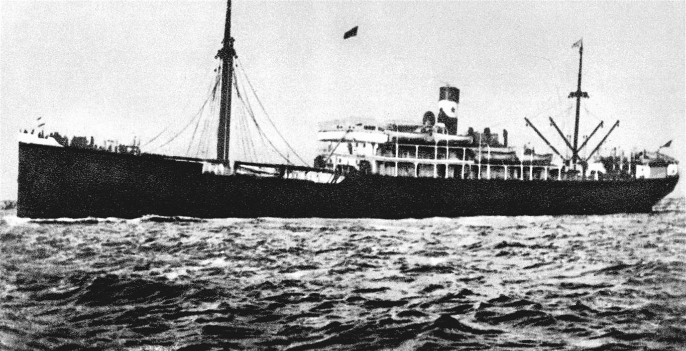Tư liệu về thông số kỹ thuật của con tàu
Theo hồ sơ trong cuốn Danh mục sơ lược về các thương thuyền của các nước trên thế giới - bản in lần thứ 58 (năm 1927 - 1928) của cơ quan đăng kiểm Pháp: tàu Amiral Latouche Tréville được đóng tại vùng Saint Nazaire của nước Pháp do xưởng đóng tàu Chantiers de La Loire đóng. Tàu được hạ thủy vào ngày 21/9/1903, thuộc hãng tàu Des Charguers Réunis và bị phá hủy vào ngày 10/3/1929 tại xưởng phá tàu Dunkerque.
Tàu có khả năng chứa hàng và người: 3.436 tấn. Tàu có hai dàn cột cầu. Vỏ tàu bằng sắt, có một chân vịt, có 8 hầm kín nước, 1 hầm nước dằn tàu và hai boong. Toàn bộ hệ thống chiếu sáng bằng điện.
Tàu chạy bằng máy hơi nước (máy chính), vận tốc: 13 hải lý/h.Đây là một trong những tàu cỡ lớn đầu thế kỷ XX vừa chở hàng, vừa chở người.
Trên cơ sở dữ liệu với thông số kỹ thuật của con tàu, Nhà máy Ba Son thuộc Cục Kỹ thuật Hải quân đã thiết kế xây dựng mô hình con tàu và tặng Khu lưu niệm Chủ tịch Hồ Chí Minh tại Bến cảng Nhà Rồng (nay là Bảo tàng Hồ Chí Minh, chi nhánh Thành phố Hồ Chí Minh) toàn bộ thiết kế mô hình cùng bản trích lai lịch những thông số cơ bản của con tàu.
Hành trình của con tàu
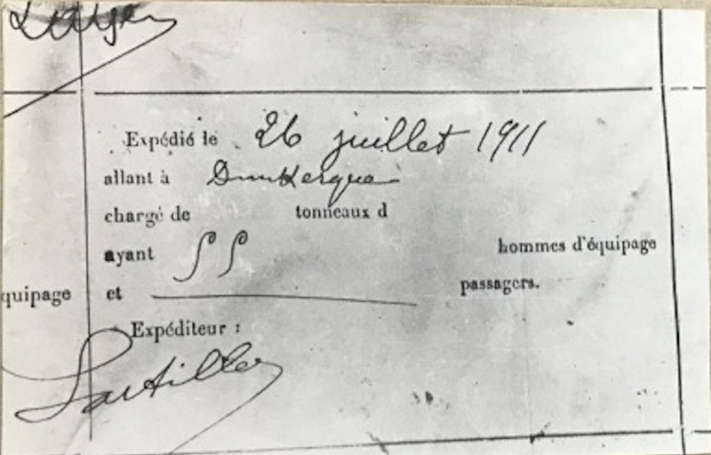Trưa ngày 5/6/1911, con tàu Amiral Latouche Tréville đã rời bến sông Sài Gòn với 72 thủy thủ trên tàu. Sau đó, tàu di chuyển từ Sài Gòn tới Singapore trong 3 ngày. Ngày 8/6/1911, tàu cập cảng Keppel của Singapore. Từ cảng Keppel, Singapore, tàu lại tiếp tục hành trình của mình trên Ấn Độ Dương để tới Quốc đảo Sri Lanka. Vượt qua phần còn lại của Ấn Độ Dương, tàu đi vào vùng biển đỏ, qua tiếp kênh đào rồi cập cảng Said phía Bắc Ai Cập. Từ cảng Said, Ai Cập, tàu lại tiếp tục hành trình vượt qua Địa Trung Hải để tới cảng Marseille Pháp ngày 6/7/1911. Tàu Amiral Latouche Tréville không dừng lại ở Marseille, nó phải tiếp tục hành trình về phía Bắc của nước Pháp.
Ngày 15/7/1911, tàu cập cảng Le Havre, cảng chính ở phía Bắc nước Pháp. Con tàu còn di chuyển đến cảng Cảng Dunkerque và dừng chân ở đó đồng thời kết thúc 40 ngày lênh đênh trên biển.
Cùng với hành trình của con tàu, làm công việc phụ bếp, Người phải dậy từ 4h sáng đến 9h đêm và làm việc với cường độ liên tục: quét dọn sạch sẽ nhà bếp lớn trên tàu, rồi đốt lửa trong các lò, đi khuân than, xuống hầm lấy rau, thịt, cá, nước đá… Công việc khá nặng nhọc vì dưới bếp thì rất nóng và trong hầm rất rét, nhất là phải vác một bao tải nặng, vừa leo lên những bậc thang trong khi con tàu tròng trành.
Nhà bếp chăm lo cho 7, 8 trăm người cả nhân viên và hành khách: Những chiếc chảo bằng đồng lớn và nặng quá, Người phải kéo lê trên sàn. Những cái nồi cao quá phải leo lên ghế để chùi nồi. Có lần Người còn suýt chết đuối do gặp biển nổi sóng dữ dội, may bị sóng đẩy vào giữa cột buồm và dây xích nên đã thoát chết.
Chính vì công việc dưới tàu cực khổ nhiều nguy hiểm, nên 14 thủy thủ, nhân viên của tàu đã bỏ nghề lên các bến dọc đường. Khi tàu đến Le Havre, tổng số người làm trên tàu chỉ còn có 58 người, trong đó có Người. Người đã thắng sóng gió và điều kiện làm việc cực nhọc dưới tàu biển để khởi đầu cho hành trình tìm đường cứu nước.
Không những thế, vào lúc 9h đêm khi công việc kết thúc, mọi người đánh bài, nghỉ ngơi, Người vẫn đọc, viết đến 11h hoặc nửa đêm.
Như vậy, theo hành trình con tàu Amiral Latouche Tréville, anh Văn Ba - Nguyễn Tất Thành có điều kiện dừng chân tại 6 bến cảng của 4 quốc gia: Singapore, Srilanca, Ai Cập, Pháp. Đến mỗi nơi, Người lại có điều kiện tìm hiểu về cuộc sống, đất nước, con người những nơi đây. Từ đó, Người thêm tin rằng con đường cứu nước phải là giải phóng dân tộc gắn liền với giải phóng giai cấp.
Sau 4 tháng con tàu lại đưa Nguyễn Tất Thành trở về Sài Gòn. Trong sổ lĩnh lương của tàu Amiral Latouche Tréville (bản chụp lưu tại Bảo tàng Hồ Chí Minh) ghi rõ Người đã nhận lương tại Sài Gòn, ngày 16/10/1911. Ngày 31/10/1911, từ Sài Gòn Nguyễn Tất Thành gửi thư cho Khâm sứ Trung Kỳ nhờ chuyển số tiền 15 đồng cho cha là Nguyễn Sinh Huy. Nhưng Bác đã không dừng lại, cũng không trở về mà tiếp tục cuộc hành trình tiếp theo.
Trên con tàu, hành trình của người thanh niên Nguyễn Tất Thành ấy mới kết thúc một chặng thứ nhất và chuẩn bị cho một chặng thứ hai trên một chiếc tàu của hãng vận tải hợp nhất Chargeurs Réunis sẽ đi vòng quay châu Phi, châu Mỹ. Đến khoảng 1914 anh trở về Anh và cuối năm 1917 từ Anh trở lại Pháp, Bác bắt đầu hoạt động yêu nước của mình.
Bến Nhà Rồng
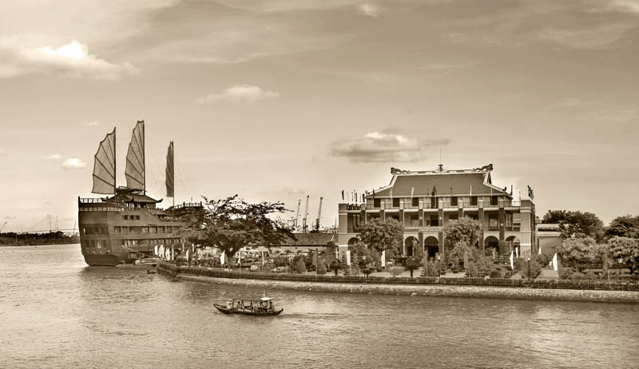Bến Nhà Rồng nằm tại số 1 Nguyễn Tất thành, Phường 12, Quận 4, TP.HCM.
Bến Nhà Rồng hiện nay là Bảo tàng Hồ Chí Minh chi nhánh TP.HCM. Nơi lưu giữ hơn 11.000 tư liệu, hiện vật và 3.300 đầu sách chuyên đề về Chủ tịch Hồ Chí Minh. Các hiện vật được trưng bày theo từng phòng chuyên đề và chủ đề, giúp du khách dễ dàng tiếp cận và tìm hiểu sâu về cuộc đời và sự nghiệp cách mạng của Người.
Lịch sử về Bến Nhà Rồng
Bến Nhà Rồng nằm bên sông Sài Gòn và được xây dựng từ giữa năm 1862. Trước đây, nơi này là trụ sở của Messageries Maritimes (1864-1955). Một trong những hãng vận tải hàng hải đầu tiên của thực dân Pháp tại khu vực.
Ngày 15/7/1911, tàu cập cảng Lơ Havơrơ (Le Havre), cảng chính ở phía Bắc nước Pháp. Con tàu còn di chuyển đến cảng Cảng Đoong kec (Dunkerque) và dừng chân ở đó đồng thời kết thúc 40 ngày lênh đênh trên biển.
Sau thất bại của Pháp tại Đông Dương vào năm 1954. Bến Cảng Nhà Rồng lịch sử được chính quyền miền Nam Việt Nam quản lý. Đưa vào phục vụ cảng đường thủy của chính quyền Sài Gòn. Sau 1975 và sự thống nhất đất nước, nơi đây trải qua quá trình tu sửa và trang trí lại.
Năm 1979, nhân dịp kỷ niệm 10 năm ngày mất của Bác. Bến Nhà Rồng mở cửa cho khách tham quan, trưng bày về “Sự nghiệp tìm đường cứu nước của Chủ tịch Hồ Chí Minh (1911-1945)”. Thời gian sau này, khu lưu niệm đã trở thành Bảo tàng Hồ Chí Minh – Chi nhánh Thành phố Hồ Chí Minh.
Sự kiện lịch sử gắn với nơi đây
Ngày 5/6/1911, Bác Hồ rời bến Nhà Rồng khi mới 21 tuổi, với tên gọi Nguyễn Tất Thành lên con tàu Amiral Latouche-Tréville trong vai trò phụ bếp. Đây là khoảnh khắc khởi đầu cho một hành trình dài gian khổ kéo dài 30 năm bôn ba ở nước ngoài để tìm kiếm con đường cách mạng cho dân tộc.
• Tháng 1/1941, sau nhiều năm học tập và hoạt động cách mạng tại Pháp, Liên Xô, Trung Quốc… Người quyết định
trở về nước để trực tiếp lãnh đạo phong trào giải phóng dân tộc.
• Năm 1954, chiến thắng Điện Biên Phủ vang dội đã chứng minh con đường cách mạng mà Người lựa chọn là đúng
đắn.
• Năm 1975, đất nước thống nhất. Bến Nhà Rồng – nơi Bác Hồ rời xa bến cảng Nhà Rồng năm ấy – trở thành di
tích lịch sử Bến Nhà Rồng, gắn liền với ký ức dân tộc.
• Năm 1979, khu vực này được phát triển thành nơi trưng bày tư liệu, hiện vật về Bác. Tuy nhiên, khi đó vẫn
còn hạn chế về quy mô.
• Đến năm 1995, Bảo tàng Hồ Chí Minh – chi nhánh Bến Nhà Rồng chính thức ra mắt với diện mạo mới. Nơi đây,
lưu giữ đầy đủ những câu chuyện, hình ảnh, hiện vật liên quan đến cuộc đời cách mạng và tình cảm sâu nặng
của Bác với đồng bào miền Nam.
⇒ Bến cảng Nhà Rồng là địa danh lịch sử mang đậm dấu ấn cách mạng và văn hóa dân tộc. Không chỉ là điểm tham quan nổi tiếng tại TP.HCM, nơi đây được xem là di tích lịch sử Bến Nhà Rồng – Nơi gắn liền với hành trình ra đi tìm đường cứu nước của Chủ tịch Hồ Chí Minh vào năm 1911.
⇒ Không chỉ là nơi ghi dấu ấn về hành trình cứu nước của Người. Địa danh mang ý nghĩa thiêng liêng, trở thành biểu tượng của lòng yêu nước, khát vọng tự do và ý chí cách mạng kiên cường.
Kiến trúc và nghệ thuật
Kiến trúc Bến Nhà Rồng là sự kết hợp hài hòa giữa phong cách Pháp cổ điển và những yếu tố truyền thống Việt Nam. Công trình được xây dựng từ năm 1863, với phần mái được thiết kế theo kiểu đình chùa phương Đông. Trong khi thân tòa nhà mang đậm hơi hướng châu Âu cổ điển. Trên đỉnh mái là hình rồng chầu mặt nguyệt – biểu tượng linh thiêng gắn liền với văn hóa Việt.
Bên trong di tích là hệ thống các phòng trưng bày được tổ chức khoa học và trang nghiêm. Với nhiều hình ảnh bên trong, tài liệu, hiện vật, mô hình… phản ánh chân thực về cuộc đời cách mạng của Chủ tịch Hồ Chí Minh. Mỗi phòng đều mang một chủ đề riêng, nổi bật như:
• Phòng chủ đề 1: Giới thiệu tuổi thơ và những năm tháng đầu tiên trong hành trình cách
mạng của Bác
(1890–1920).
• Phòng chủ đề 2: Quá trình Bác tiếp cận chủ nghĩa Mác – Lênin và thành lập chính đảng đầu
tiên của giai cấp
công nhân Việt Nam (1920–1930).
• Phòng chủ đề 3: Vai trò lãnh đạo của Bác trong Cách mạng Tháng Tám và khai sinh nước Việt
Nam Dân chủ Cộng
hòa (1930–1954).
• Phòng chủ đề 4: Giai đoạn Bác lãnh đạo xây dựng miền Bắc XHCN và chỉ đạo cuộc kháng chiến
thống nhất đất
nước (1954–1969).
• Phòng chủ đề 5: Nhân dân thực hiện di chúc thiêng liêng của Bác, tiếp tục xây dựng đất
nước phát triển,
giàu mạnh (1969–nay).
Cuộc sống nhà báo
Báo Thanh Niên
Tháng 11/1924, sau hơn một năm ở Liên Xô, Nguyễn Ái Quốc được Bộ Phương Đông của Quốc tế Cộng sản cử đến Quảng Châu - trung tâm của phong trào cách mạng dân chủ Trung Quốc. Ở đây, Người bắt liên lạc với những thanh niên Việt Nam yêu nước.
Tháng 6 năm 1925, từ nhóm cách mạng đầu tiên, Người thành lập Hội Việt Nam Cách mạng Thanh niên nhằm tập hợp những thanh niên yêu nước có xu hướng cộng sản. Nguyễn Ái Quốc từng bước chuẩn bị về chính trị, tư tưởng và tổ chức cho sự ra đời một đảng Marxist ở Việt Nam. Người đã mở các lớp huấn luyện chính trị, đào tạo đội ngũ cán bộ, chuẩn bị cho sự ra đời chính Đảng ở trong nước.
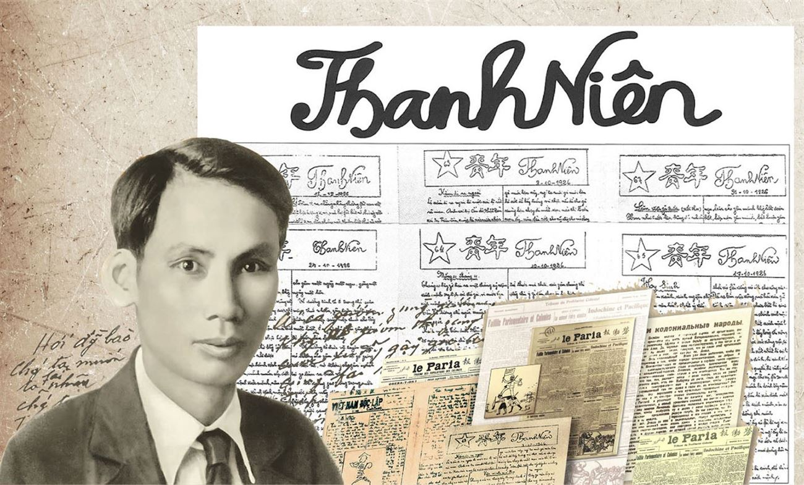Nơi thành lập: sau khi thành lập Hội, Nguyễn Ái Quốc đã cho xuất bản tờ báo Thanh niên tại ngôi nhà số 13 (nay là số 248 - 250), đường Văn Minh, thành phố Quảng Châu, tỉnh Quảng Đông, Trung Quốc để giữ vai trò tổ chức và hướng dẫn phong trào cách mạng trong nước.
Người thành lập: Các đồng chí Lê Hồng Sơn, Hồ Tùng Mậu, Lê Duy Điếm, Trương Vân Lĩnh đã tham gia sáng lập và đồng hành cùng tờ báo.
Nơi thành lập: sau khi thành lập Hội, Nguyễn Ái Quốc đã cho xuất bản tờ báo Thanh niên tại ngôi nhà số 13 (nay là số 248 - 250), đường Văn Minh, thành phố Quảng Châu, tỉnh Quảng Đông, Trung Quốc để giữ vai trò tổ chức và hướng dẫn phong trào cách mạng trong nước.
Hình thức của báo: Báo Thanh niên được viết tay bằng bút thép trên trang giấy sáp, in mỗi kỳ trên 100 bản tại cơ sở bí mật ở Quảng Châu, Trung Quốc. Thời gian đầu, báo ra một tuần một kỳ, về sau do điều kiện khó khăn nên số sau cách số trước có khi 3 tuần, khi 5 tuần. Măng sét báo viết hai chữ Thanh niên bằng tiếng Hán và tiếng Việt. Góc trái mỗi tờ báo là ngôi sao 5 cánh, trong đó ghi số báo. Phần lớn là 2 trang, một số ít ra 4 trang, khổ giấy trung bình 13cm x 19cm. Là cơ quan ngôn luận của Hội Việt Nam Cách mạng Thanh niên nhưng từ số 1 đến số 107 không thấy có tiêu đề của tờ báo, cho đến số 108 ngày 28/7/1929 mới thấy có tiêu đề của tờ báo là “Cơ quan của Đảng Việt Nam cách mạng thanh niên” ở vị trí ngôi sao năm cánh được thay bằng một ngôi sao và hình búa liềm.
Hoàn cảnh ra đời: Ra đời trong hoàn cảnh cách mạng Việt Nam đang hoạt động bí mật ở nước ngoài, Báo Thanh niên số lượng in có hạn, mỗi số xuất bản được 100 bản. Sau khi báo phát hành, số lớn được đóng gói rất cẩn thận, theo đường dây bí mật của Đảng, từ Quảng Châu chuyển về trong nước và sang Xiêm, Nhật để tuyên truyền đường lối cách mạng. Báo Thanh niên đã góp phần quan trọng vào việc truyền bá chủ nghĩa Mác - Lênin vào Việt Nam, chuẩn bị về mặt tư tưởng, chính trị và tổ chức để tiến tới thành lập chính đảng của giai cấp vô sản vào đầu năm 1930. Sự ra đời của báo Thanh niên đã mở đầu lịch sử truyền thống vẻ vang của báo chí cách mạng Việt Nam.
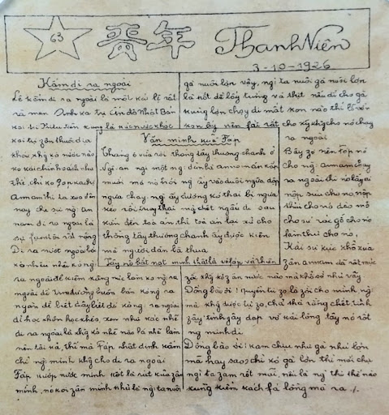Nguồn: Trường Chính Trị Tô Hiệu Hải Phòng và Báo Nhân Dân Việt Nam
Báo Việt Nam Độc Lập
Ngày và địa điểm thành lập: Sau nhiều năm bôn ba năm châu bốn biển tìm đường cứu nước, ngày 28/1/1941, Bác Hồ trở về nước, đến Pác Bó, xã Trường Hà (Hà Quảng) xây dựng căn cứ địa trực tiếp lãnh đạo cách mạng Việt Nam. Được sự ủy nhiệm của Quốc tế Cộng sản, tại đây, lãnh tụ Nguyễn Ái Quốc (Chủ tịch Hồ Chí Minh) đã triệu tập Hội nghị Trung ương Đảng lần thứ 8 (từ ngày 10/5 19/5/1941), mở lớp huấn luyện cán bộ Việt Minh, xây dựng các hội cứu quốc, biên dịch Lịch sử Đảng Cộng sản Liên Xô và ra báo Việt Nam Độc Lập.

Báo Việt Nam Độc Lập lúc đầu là cơ quan tuyên truyền của Tỉnh hội Việt Minh Cao Bằng. Khi căn cứ địa mở rộng, báo Việt Nam Độc lập trở thành cơ quan của Tỉnh hội Việt Minh Cao Bằng - Bắc Kạn (từ số 229 đến số 286). Từ số 287 đến số 325 là cơ quan của Liên tỉnh hội Việt Minh Cao - Bắc - Lạng. Số báo đầu tiên được ra ngày 1/8/1941, lãnh tụ Nguyễn Ái Quốc cho đánh số 101. Hiện nay, Bảo tàng Cách mạng Việt Nam còn lưu trữ bản gốc của 156 số báo Việt Nam Độc Lập.
Qua các trang báo Việt Nam Độc Lập, người đọc cảm nhận rõ nét về tầm nhìn lãnh tụ Nguyễn Ái Quốc trong thời kỳ cách mạng đang hoạt động bí mật. Mỗi tin ngắn, bài báo luôn kêu gọi toàn dân đoàn kết, cổ vũ, động viên cho cuộc đấu tranh cách mạng giải phóng dân tộc. Tố cáo những tội ác dã man của phát xít Nhật - đế quốc Pháp đàn áp, bóc lột dân ta. Hướng dẫn đồng bào giữ bí mật, tham gia cứu nước, luyện tập quân sự, bảo vệ cơ quan, phòng địch càn phá. Cung cấp cho người đọc thông tin nhằm nâng cao ý thức chính trị, một tầm nhìn rộng rãi, biết gắn phong trào cách mạng Việt Nam với tình hình quốc tế... Củng cố niềm tin vào thắng lợi ngày mai.
Hình thức báo: Báo in trên khổ giấy 20 x 30 cm. Từ tháng 8/1941 đến khi Chủ tịch Hồ Chí Minh đi Trung Quốc (tháng 8/1942), Báo Việt Nam Độc lập ra được trên 30 số, 400 bản, mỗi tháng ra 3 kỳ, mỗi kỳ 2 trang. Sau khi Người ra nước ngoài, đồng chí Phạm Văn Đồng trực tiếp chỉ đạo báo cho đến tháng 4/1945.
“Việt Nam Độc lập” là tờ báo phản ánh rất đậm nét phong trào hoạt động cách mạng của vùng căn cứ địa từ năm 1942 - 1945. Qua tờ báo, người đọc thấy rõ được những chủ trương, đường lối của Đảng, của Chủ tịch Hồ Chí Minh được trình bày một cách rất cụ thể bằng một phương pháp rất đặc biệt, một lối văn rất dễ hiểu, sâu sắc, gây xúc động lòng người.
Số báo đầu tiên: Số 101 ra ngày 1/8/1941, là số báo đầu tiên của Việt Nam Độc Lập, đăng bài xã luận: “Tây cốt làm cho dân ta ngu, làm cho dân ta hèn. Ngu thì phải hèn. Ta ngu hèn thì nó dễ trị, dễ ăn hiếp, dễ bóc lột. Tây có 2 cách làm cho ta ngu, hèn: (1) là cách bưng mắt. Nó không cho ta tự do ra báo chí. Nên trong nước và thiên hạ có việc gì ta cũng không biết. Ví dụ: Khi Tây mất nước rồi, dân ta khởi nghĩa ở Nam Kỳ, ở Nghệ, ở Bắc Sơn, mà ta ở Cao Bằng không biết gì hết. (2) là cách lừa gạt. Nó bảo bọn đê hèn như báo Đông - Pháp đăng tin bố láo để lừa gạt dân ta. Ví dụ: dân không có muối, không có diêm, không có dầu. Đâu cũng oán Tây, cũng xục rục mà báo Đông - Pháp cứ nói như ta thái bình lắm... Báo Việt - Nam Độc Lập cốt làm cho dân ta hết ngu hèn, biết các việc, biết đoàn kết, đặng đánh Tây đánh Nhật, làm cho “Việt Nam độc lập”, bình đẳng tự do! Kháng Pháp, Kháng Nhật! Thân Hoa! Việt Nam độc lập”.
Báo Việt Nam Độc Lập là một trong những “binh chủng” tư tưởng văn hóa của Đảng, đã có nhiều cống hiến cho sự nghiệp giải phóng dân tộc.
Nhằm thực hiện ngày càng tốt hơn chính sách dân tộc của Đảng, tháng 8/1956, Khu tự trị Việt Bắc được thành lập. Khu ủy đã quyết định chuyển báo Việt Nam Độc Lập từ tỉnh Cao Bằng về làm cơ quan tuyên truyền của Đảng bộ Đảng Lao động Việt Nam Khu tự trị Việt Bắc. Tòa soạn đóng tại trung tâm thị xã Thái Nguyên - Thủ phủ Khu tự trị Việt Bắc. Những ngày đầu, báo đưa về in tại Nhà in Diên Hồng - Hà Nội, sau đó Tòa soạn có nhà in riêng. Khổ báo 32 x 54 cm rồi tăng lên 40 x 54 cm. Phát hành 1 kỳ trong tuần, sau đó tăng lên 2 kỳ, số lượng tăng từ 450 tờ lên hàng nghìn tờ. Trong 20 năm xuất bản, Báo Việt Nam Độc lập Khu tự trị Việt Bắc đã phát hành trên 8.600.000 tờ báo, trên 35.500.000 trang báo.
Đầu năm 1976, Khu tự trị Việt Bắc được giải thể, sau khi đã hoàn thành nhiệm vụ vẻ vang do Đảng và Nhà nước giao cho. Đảng và Nhà nước đã tặng thưởng Huân chương Độc lập hạng nhất cho Khu tự trị Việt Bắc. Sau hơn 35 năm hoạt động, Báo Việt Nam Độc Lập cũng ngừng xuất bản. Báo Việt Nam Độc Lập đã được Nhà nước tặng thưởng Huân chương Lao động hạng ba.
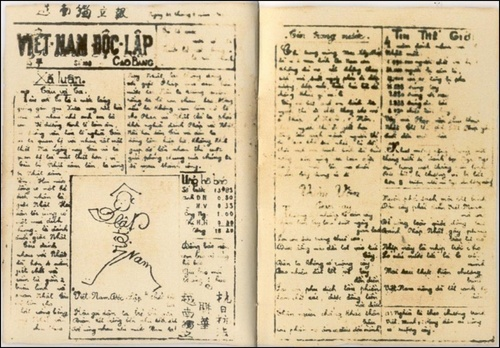Nguồn: Cổng thông tin điện tử tỉnh Cao Bằng
Báo Cứu Quốc
Hội nghị nêu cao nhiệm vụ giải phóng dân tộc, động viên khối đoàn kết toàn dân tộc, không phân biệt giai cấp, dân tộc, tôn giáo, chính kiến, tích cực tham gia phong trào cách mạng, khởi nghĩa giành chính quyền về tay nhân dân.
Nghị quyết Hội nghị Trung ương nói trên nhấn mạnh: "Trong lúc này, quyền lợi của bộ phận, giai cấp phải đặt dưới sự sinh tử, tồn vong của quốc gia, của dân tộc. Trong lúc này, nếu không giải quyết được vấn đề dân tộc giải phóng, không đòi được độc lập tự do cho toàn thể dân tộc, thì chẳng những toàn thể quốc gia, dân tộc còn chịu mãi kiếp ngựa trâu, mà quyền lợi các bộ phận, giai cấp đến vạn năm cũng không đòi lại được".
Hội nghị Trung ương 8 đã bầu ra Ban Chấp hành Trung ương Ðảng chính thức và bầu đồng chí Trường Chinh làm Tổng Bí thư của Ðảng. Theo đề nghị của đồng chí Nguyễn Ái Quốc, Hội nghị Trung ương 8 quyết định đổi tên "Mặt trận thống nhất dân tộc phản đế Ðông Dương" thành "Mặt trận Việt Nam Ðộc lập Ðồng Minh", gọi tắt là Việt Minh; các đoàn thể nhân dân yêu nước trong Mặt trận Việt Minh đều lấy tên là Hội cứu quốc.
Hội nghị Trung ương 8 chủ trương "lúc này các sách báo tuyên truyền không nên dùng danh nghĩa Ðảng nhiều, phải lấy danh nghĩa Việt Minh và các đoàn thể cứu quốc thay vào". Thực hiện chủ trương đó, Ban Chấp hành Trung ương quyết định ra báo Cứu Quốc, cơ quan tuyên truyền cổ động của Mặt trận Việt Minh.
“Việt Nam Độc lập” là tờ báo phản ánh rất đậm nét phong trào hoạt động cách mạng của vùng căn cứ địa từ năm 1942 - 1945. Qua tờ báo, người đọc thấy rõ được những chủ trương, đường lối của Đảng, của Chủ tịch Hồ Chí Minh được trình bày một cách rất cụ thể bằng một phương pháp rất đặc biệt, một lối văn rất dễ hiểu, sâu sắc, gây xúc động lòng người.
Ngày và nơi thành lập: Ngày 25/01/1942, báo Cứu Quốc ra số đầu ở một ngôi chùa cổ ven sông Hồng thuộc tỉnh Phúc Yên, gần Hà Nội, do đồng chí Tổng Bí thư Trường Chinh trực tiếp phụ trách. Báo Cứu Quốc số 1 có bốn trang, giấy trắng, in trên đá, trang đầu có ngôi sao năm cánh tỏa ra năm tia sáng.
Nội dung: Báo đăng lời kêu gọi thống thiết, hùng hồn:
"Hỡi các giới sĩ, nông, công, thương, binh!
Hỡi các đoàn thể Cứu Quốc!
Hỡi toàn thể đồng bào nước Việt Nam!
Ðã 80 năm, Tổ quốc kính yêu mất quyền độc lập, sa vào vòng nô lệ của giặc Pháp tham tàn.
Ðã 80 năm, dân tộc Việt Nam phải mang trên trán vết quốc sỉ nhuốc nhơ mà máu đào của bao nghĩa sĩ anh hùng tới nay chưa rửa sạch.
Giờ đây, quốc sỉ tăng thêm nhục nhã, quốc thù tăng thêm căm hờn. Giờ đây, giang sơn tiêu điều lại thêm giặc Nhật chà đạp, tấm thân trâu ngựa lại thêm một tầng áp bực đọa đày. Nhật khai chiến với Anh, Mỹ lôi cuốn xã hội ta vào vòng bom đạn...
Cứu Quốc sẽ giãi bày nỗi lầm than thống khổ của nhân dân.
Cứu Quốc sẽ nêu cao ý muốn thiết tha của trăm họ.
Cứu Quốc sẽ là người chỉ dẫn trung thành cùng đồng bào tiến bước trên đường giải phóng dân tộc.
Cứu Quốc nguyện làm tròn nhiệm vụ thiêng liêng của mình. Mong đồng bào yêu nước hãy tận tâm ủng hộ Cứu Quốc về mọi phương diện, hãy kiên quyết tiến lên dưới bóng cờ đỏ sao vàng".
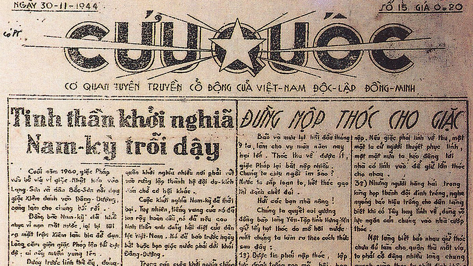Nơi in báo: Báo Cứu Quốc lúc đầu in tại nhà in của Trung ương Ðảng cùng với báo Cờ Giải phóng
Ban biên tập: đồng chí Phạm Ðức Khiêm phụ trách. Sau, báo Cứu Quốc in tại nhà in riêng, nhà in Phan Ðình Phùng, do đồng chí Lê Viên phụ trách. Từ năm 1944, báo Cứu Quốc do đồng chí Xuân Thủy phụ trách. Ðể tránh tai mắt của mật thám Pháp, tòa soạn, nhà in báo Cứu Quốc hoạt động bí mật, liên tục di chuyển, khi thì ở các tỉnh Bắc Ninh, Bắc Giang, Phúc Yên, khi thì Quốc Oai, Chương Mỹ và cuối cùng là ở Thu Quế, xã Song Phượng, huyện Ðan Phượng thuộc tỉnh Hà Ðông, bên bờ sông Ðáy.
Ðể đem tiếng nói của Ðảng và Mặt trận Việt Minh đến nhân dân, giục giã mọi người đứng lên cứu nước, đã có những người làm báo và đọc báo Cứu Quốc bị kẻ thù bắt giam, đầy ải hết sức dã man.
Cùng với báo Cờ Giải phóng của Ðảng, báo Cứu Quốc của Mặt trận Việt Minh luôn hừng hực khí thế chiến đấu, có những cống hiến lớn vào việc tuyên truyền rộng rãi và động viên mạnh mẽ toàn dân đoàn kết nổi dậy giành chính quyền.
Sáng 19/08/1945, Xứ ủy Bắc Kỳ phát lệnh tổng khởi nghĩa ở Hà Nội và chỉ thị cho báo Cứu Quốc rời ngay làng Thu Quế, chuyển về nội thành Hà Nội, sau khi đã in xong và phát hành khắp nơi báo Cứu Quốc số đặc biệt bốn trang, in đỏ, kêu gọi toàn dân đứng lên tổng khởi nghĩa.
Báo Cứu Quốc xuất bản công khai ở thủ đô Hà Nội, trở thành tờ báo hằng ngày lớn nhất của Ðảng Cộng sản Ðông Dương, Nhà nước Việt Nam Dân chủ Cộng hòa và Mặt trận Việt Minh. Trong tình hình mới, báo Cứu Quốc tuyên truyền, giải thích, phổ biến những chủ trương, chính sách mới của cách mạng, đấu tranh không khoan nhượng với những luận điệu sai trái của những tờ báo phản động tay sai nước ngoài, bảo vệ chính quyền cách mạng và cuộc sống mới. Nhân dân Hà Nội và cả nước hằng ngày đón đọc báo Cứu Quốc với niềm tin yêu và sự nhiệt tình khôn tả. Những tháng cuối năm 1946, với những bài viết mang đậm tính chiến đấu và những tin tức thời sự nhạy bén, báo Cứu Quốc đã động viên được trong nhân dân một cao trào yêu nước và một tinh thần sẵn sàng chiến đấu trước sự gây hấn, khiêu khích của thực dân Pháp.
Bước vào cuộc kháng chiến lâu dài chống thực dân Pháp xâm lược, bất chấp bom đạn và mọi gian nguy khổ cực, trong bất cứ tình huống nào, báo Cứu Quốc vẫn xuất bản đều, bám sát định hướng chính trị của Ðảng và Mặt trận, động viên được trong toàn quân, toàn dân một tinh thần đoàn kết, kháng chiến bền bỉ. Các phóng viên báo suốt chín năm kháng chiến tham gia các chiến dịch quân sự và các trận đánh lớn của bộ đội, ở tiền tuyến cũng như ở vùng sau lưng địch, đến với nhân dân các địa phương hăng hái sản xuất và đi dân công phục vụ chiến đấu, hòa mình vào cuộc kháng chiến hào hùng của dân tộc.
Báo thu hút được rất nhiều cộng tác viên là cán bộ quân sự, nhân sĩ, trí thức, văn nghệ sĩ nổi tiếng của kháng chiến. Chủ tịch Hồ Chí Minh đã viết nhiều bài cho báo Cứu Quốc, đặc biệt trong nhiều năm liền, Người viết chuyên mục "Chuyện gần xa" trên báo Cứu Quốc với bút danh "Ð.X". Ðồng chí Trường Chinh đánh giá: "Chúng ta có báo Cứu Quốc Trung ương, lại có báo Cứu Quốc ở khắp các liên khu kháng chiến. Ðó là tờ báo hằng ngày duy nhất của Ðảng và nhân dân ta trong thời kỳ này. Chỉ riêng việc ra báo đều đặn suốt gần 3.000 ngày trong điều kiện chiến tranh vô cùng ác liệt, gian khổ, thiếu thốn, cũng có thể nói, đó là một kỳ tích của nhân dân ta".
Bài học của báo Cứu Quốc là luôn trung thành với đường lối chính trị của Ðảng lãnh đạo, tôn chỉ, mục đích của Mặt trận Việt Minh rồi Mặt trận Liên Việt, tuân theo những lời dạy quý báu của Bác Hồ về nghề báo và coi trọng xây dựng một đội ngũ cán bộ tinh thông nghiệp vụ báo chí đồng thời có đạo đức, phẩm chất tốt, dũng cảm, năng động và sáng tạo.
Tháng 3/1951, khi Mặt trận Việt Minh thống nhất với Mặt trận Liên Việt, báo Cứu Quốc trở thành cơ quan ngôn luận của Mặt trận Liên Việt, và sau đó là của Mặt trận Tổ quốc Việt Nam. Sau cuộc kháng chiến chống thực dân Pháp thắng lợi, từ tháng 10-1954, báo Cứu Quốc từ báo hằng ngày chuyển thành báo tuần, báo Nhân Dân từ báo tuần chuyển thành báo hằng ngày. Tháng 3/1977, sau khi Mặt trận Tổ quốc Việt Nam hợp nhất với Mặt trận Dân tộc Giải phóng miền Nam Việt Nam, hai báo Cứu Quốc và Giải phóng cũng hợp nhất lấy tên là báo Ðại Ðoàn Kết. Ðồng chí Trường Chinh đánh giá:
"Báo Cứu Quốc là niềm tự hào của báo Ðại Ðoàn Kết ngày nay và cũng là niềm tự hào chung của báo chí cách mạng nước ta"
Báo Cứu Quốc có lịch sử vẻ vang, truyền thống tốt đẹp, phong cách cởi mở, đã góp phần xứng đáng vào sự nghiệp oanh liệt của dân tộc đấu tranh cho độc lập tự do và chủ nghĩa xã hội.
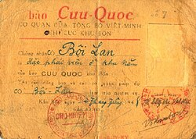Nguồn: Báo Nhân Dân Việt Nam
Báo Nhân Dân
Ngày thành lập: Mùa xuân năm 1951, Đại hội toàn quốc lần thứ II của Đảng họp tại Việt Bắc từ ngày 11 đến ngày 19 tháng 2 năm 1951.Đại hội thông qua Nghị quyết xuất bản Báo Nhân Dân, cơ quan trung ương của Đảng Lao động Việt Nam.
Ban Biên tập đầu tiên của báo Đảng gồm tám người thì có đến năm vị là Ủy viên Bộ Chính trị và Ban Bí thư Trung ương: các đồng chí Trường Chinh, Phạm Văn Đồng, Hoàng Quốc Việt, Nguyễn Chí Thanh, Lê Văn Lương Đại hội toàn quốc của Đảng vừa bế mạc, một buổi trưa mùa xuân, vào khoảng từ ngày 19 đến ngày 25 tháng hai năm 1951 - theo lời kể của Thép Mới - đồng chí Trường Chinh, Tổng Bí thư Trung ương Đảng và đồng chí Tố Hữu, khi đó là Ủy viên dự khuyết Trung ương Đảng, họp bàn việc ra số đầu Báo Nhân Dân. Nơi làm việc là một cái rẫy của đồng bào, cạnh địa điểm họp Đại hội toàn quốc, thuộc xã Vinh Quang huyện Chiêm Hóa, tỉnh Tuyên Quang. Bàn ghế làm việc là mấy thân cây gỗ đồng bào làm rẫy vừa ngả xuống. Người giúp việc hai đồng chí là Thép Mới, phóng viên báo chí tại Đại hội Đảng. Đồng chí Phan Nghiêm, phóng viên điện ảnh tại Đại hội, nhận rõ ý nghĩa lịch sử của sự kiện, lặng lẽ vác máy ra quay cảnh hai đồng chí lãnh đạo của Đảng trực tiếp biên tập số báo đầu tiên của Báo Nhân Dân trong khung cảnh hết sức đặc biệt, đánh dấu “một thời Việt Bắc”. Đoạn phim tư liệu điện ảnh dài bảy phút ấy được tách riêng, không nằm trong bộ phim tài liệu về Đại hội toàn quốc lần thứ II của Đảng.

Nguồn: Báo Nhân Dân Việt Nam
Sơ thảo Luận cương Lenin
Sơ thảo Luận cương Lenin
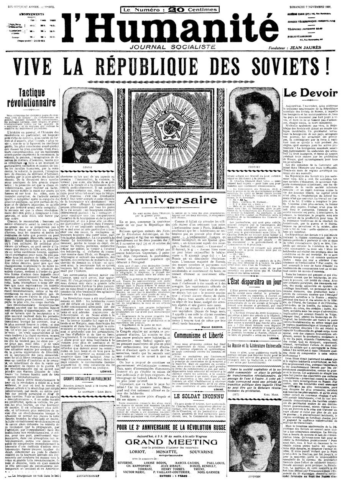Sự kiện
Tháng 7/1920, Nguyễn Ái Quốc đọc tác phẩm của V.I.Lenin: Sơ thảo lần thứ nhất những luận cương về vấn đề dân tộc và vấn đề thuộc địa, đăng trên báo L’Humanité, số ra ngày 16 và 17/7/1920.
Nội dung
Cơ bản của “Sơ thảo lần thứ nhất những luận cương về vấn đề dân tộc và vấn đề thuộc địa”
1. Gắn liền vấn đề dân tộc với vấn đề thuộc địa, khẳng định mọi dân tộc đều có quyền độc lập, tự chủ, không
phân biệt màu da.
2. Các Đảng Cộng sản ở nước đế quốc có trách nhiệm ủng hộ và giúp đỡ phong trào giải phóng dân tộc ở thuộc
địa.
3. Các dân tộc thuộc địa phải đấu tranh chống đế quốc và cả lực lượng phản động trong nước.
4. Cách mạng thế giới cần đoàn kết giữa phong trào giải phóng dân tộc và cách mạng vô sản ở các nước xã hội
chủ nghĩa.
5. Quốc tế III là bộ tham mưu chung của cách mạng thế giới, nước Nga Xô viết là thành trì và ngọn cờ đầu của
phong trào cách mạng.
Ý nghĩa
Khi đọc Sơ thảo luận cương của Lenin, Nguyễn Ái Quốc đã rút ra con đường cách mạng đúng đắn cho Việt Nam:
• Xác định kẻ thù chính là chủ nghĩa đế quốc và phong kiến tay sai.
• Nhận rõ lực lượng cách mạng chủ yếu là công nhân và nông dân.
• Hiểu vai trò cách mạng thuộc địa, có thể thắng trước chính quốc.
• Khẳng định con đường cứu nước là cách mạng vô sản, gắn giải phóng dân tộc với chủ nghĩa xã hội.
⇒ Từ đó, Người truyền bá chủ nghĩa Marx – Lenin vào Việt Nam, chuẩn bị tiền đề cho sự ra đời của Đảng Cộng sản Việt Nam.
Quan điểm của V.I.Lenin về vấn đề dân tộc, thuộc địa
1. Gắn liền vấn đề dân tộc với vấn đề thuộc địa
• Lenin khẳng định hai vấn đề này có mối quan hệ chặt chẽ, cùng nằm trong cuộc đấu tranh chung chống chủ
nghĩa đế quốc.
• Quyền tự quyết dân tộc phải bao gồm quyền độc lập, tự do hoàn toàn, chứ không chỉ là quyền tự trị hay bình
đẳng hình thức.
2. Mọi dân tộc đều có quyền bình đẳng và quyền tự quyết
• Không phân biệt màu da, chủng tộc hay trình độ phát triển.
• Phải đấu tranh xóa bỏ mọi hình thức áp bức, bóc lột, kỳ thị dân tộc.
3. Nhiệm vụ của các Đảng Cộng sản ở chính quốc
• Phải ủng hộ và giúp đỡ phong trào giải phóng dân tộc ở các nước thuộc địa, coi đó là một phần không tách
rời của cách mạng vô sản thế giới.
• Phải chống chủ nghĩa sô vanh nước lớn, phản đối tư tưởng “bảo vệ Tổ quốc” của giai cấp tư sản nhằm che đậy
sự áp bức thuộc địa.
4. Đối với các dân tộc thuộc địa
• Nhiệm vụ trước hết là giải phóng dân tộc khỏi ách đế quốc, đồng thời đấu tranh chống lại giai cấp phản
động trong nước – tay sai của đế quốc.
• Phải liên minh công – nông, phát triển phong trào dân tộc dân chủ, tiến tới cách mạng xã hội chủ nghĩa.
5. Liên minh giữa cách mạng chính quốc và thuộc địa
• Lenin nhấn mạnh sự đoàn kết giữa giai cấp vô sản ở chính quốc với nhân dân lao động ở thuộc địa là điều
kiện để lật đổ chủ nghĩa tư bản toàn cầu.
• Cách mạng ở thuộc địa có thể giành thắng lợi trước chính quốc, góp phần vào cách mạng thế giới.
6. Vai trò của Quốc tế Cộng sản và nước Nga Xô viết
• Quốc tế Cộng sản là bộ tham mưu chung của cách mạng thế giới.
• Nga Xô viết là thành trì, ngọn cờ đầu của phong trào cách mạng, có nhiệm vụ giúp đỡ các dân tộc bị áp bức.
⇒ Quan điểm của Lenin đã phát triển và hoàn thiện học thuyết Marx về vấn đề dân tộc và thuộc địa, chỉ ra con đường đúng đắn cho phong trào giải phóng dân tộc – đó là gắn độc lập dân tộc với cách mạng vô sản, giải phóng dân tộc gắn liền với chủ nghĩa xã hội.
Khẳng định công lao to lớn của V.I.Lenin với cách mạng Việt Nam
Trên hành trình tìm đường cứu nước, vấn đề lớn mà Nguyễn Ái Quốc luôn quan tâm và trăn trở chính là vấn đề con đường giải phóng dân tộc cho Việt Nam. Người luôn đặt câu hỏi: cách mạng ở Việt Nam sẽ phải đi theo con đường nào, làm thế nào để giành lại độc lập, bình đẳng cho dân tộc?
Bằng sự tổng kết các phong trào yêu nước lúc bấy giờ, Nguyễn Ái Quốc đã nhận thấy những hạn chế về đường lối, phương pháp cứu nước. Trong thời gian bôn ba khắp thế giới, đặc biệt là những năm tháng sống ở Mỹ, Anh, Pháp, Nguyễn Ái Quốc đã tìm hiểu và nghiên cứu kỹ những cuộc cách mạng ở đó. Người đã tìm hiểu, nghiên cứu cách mạng Mỹ 1776, cách mạng Pháp 1789 song Người nhận ra rằng, những cuộc cách mạng ấy là “những cuộc cách mạng chưa đến nơi”, nghĩa là cách mạng rồi mà nhân dân lao động ở đó vẫn chưa được giải phóng, vẫn còn bị áp bức, bóc lột và rất cực khổ. Vì vậy, sự nghiệp cứu nước, giải phóng dân tộc khỏi mọi áp bức, bóc lột không thể đi theo con đường của những cuộc cách mạng đó, mà phải theo con đường khác.
Tháng 7/1920, Nguyễn Ái Quốc - người thanh niên yêu nước Việt Nam đã bắt gặp Bản sơ thảo Luận cương của V.I.Lenin đăng trên báo Nhân đạo - cơ quan ngôn luận của Đảng Xã hội Pháp. Sau gần 10 năm tìm tòi, khảo nghiệm, khi đọc Bản Sơ thảo Luận cương của V.I.Lenin, Nguyễn Ái Quốc đã nhận ra, muốn cứu nước và giải phóng dân tộc không có con đường nào khác ngoài con đường cách mạng vô sản - con đường mà Cách mạng Tháng Mười đã thành công. Những tư tưởng cơ bản trong Bản Sơ thảo Luận cương của V.I.Lenin có nhiều điểm phù hợp với tư tưởng của Nguyễn Ái Quốc, đặc biệt là sự đau xót trước nỗi thống khổ của quần chúng lao động khắp thế giới và sự quan tâm đến vấn đề giải phóng các dân tộc thuộc địa cũng như tinh thần đoàn kết của quần chúng lao động trong đấu tranh.
Hồi tưởng giây phút trọng đại đó, trong tác phẩm “Con đường dẫn tôi đến chủ nghĩa Lênin”, Người viết: “Trong Luận cương ấy, có những chữ chính trị khó hiểu. Nhưng cứ đọc đi đọc lại nhiều lần, cuối cùng tôi cũng hiểu được phần chính. Luận cương của Lênin làm cho tôi rất cảm động, phấn khởi, sáng tỏ, tin tưởng biết bao! Tôi vui mừng đến phát khóc lên. Ngồi một mình trong buồng mà tôi nói to lên như đang nói trước quần chúng đông đảo: “Hỡi đồng bào bị đọa đày đau khổ! Đây là cái cần thiết cho chúng ta, đây là con đường giải phóng chúng ta!”. Từ đó, tôi hoàn toàn tin theo Lênin, tin theo Quốc tế thứ ba”.
Có thể thấy, Nguyễn Ái Quốc đón nhận Bản Sơ thảo Luận cương của V.I.Lenin với niềm phấn khởi và tin tưởng của một người chiến sĩ cách mạng sau nhiều năm tìm tòi, khảo nghiệm thực tiễn. Sau đó, chính Nguyễn Ái Quốc đã viết thư bằng tiếng Pháp gửi Quốc tế Cộng sản và cho biết, Luận cương này có ảnh hưởng rất lớn đến sự hình thành thế giới quan và giúp Người dứt khoát đi theo Quốc tế III vì nó giải quyết hợp lý vấn đề giai cấp và dân tộc, không chỉ quan tâm giải phóng nhân dân lao động và vô sản chính quốc, mà còn giải phóng các dân tộc bị áp bức, trong đó có Việt Nam.
Có thể thấy, Nguyễn Ái Quốc đón nhận Bản Sơ thảo Luận cương của V.I.Lenin với niềm phấn khởi và tin tưởng của một người chiến sĩ cách mạng sau nhiều năm tìm tòi, khảo nghiệm thực tiễn. Sau đó, chính Nguyễn Ái Quốc đã viết thư bằng tiếng Pháp gửi Quốc tế Cộng sản và cho biết, Luận cương này có ảnh hưởng rất lớn đến sự hình thành thế giới quan và giúp Người dứt khoát đi theo Quốc tế III vì nó giải quyết hợp lý vấn đề giai cấp và dân tộc, không chỉ quan tâm giải phóng nhân dân lao động và vô sản chính quốc, mà còn giải phóng các dân tộc bị áp bức, trong đó có Việt Nam.
Giải thích một cách ngắn gọn lý do ủng hộ V.I.Lenin, ủng hộ Quốc tế III, Người nói: “Chủ nghĩa Lenin đối với chúng ta, những người cách mạng và nhân dân Việt Nam, không những là cái “cẩm nang” thần kỳ, không những là cái kim chỉ nam, mà còn là mặt trời soi sáng con đường chúng ta đi tới thắng lợi cuối cùng, đi tới chủ nghĩa xã hội và chủ nghĩa cộng sản”. Luận cương của V.I.Lenin đã có ảnh hưởng trực tiếp đến sự thay đổi về nhận thức, tư tưởng của Nguyễn Ái Quốc về con đường giải phóng dân tộc của Việt Nam đúng như đồng chí Trường Chinh nhận xét: “Luận cương về những vấn đề dân tộc và thuộc địa đến với Người như một ánh sáng kỳ diệu nâng cao về chất tất cả những hiểu biết và tình cảm cách mạng mà Người hằng nung nấu”. Việc lựa chọn con đường giải phóng dân tộc theo tư tưởng cách mạng vô sản của V.I.Lenin đã giúp Nguyễn Ái Quốc giải quyết cuộc khủng hoảng về đường lối cứu nước, giải phóng dân tộc kéo dài suốt hơn nửa thế kỷ: “Lịch sử dường như đã chuẩn bị sẵn cho dân tộc Việt Nam đi vào thời kỳ hiện đại bằng miếng đất sẵn sàng được gieo trồng, và bằng những nông phu sẵn hạt giống trong tay. Miếng đất ấy là nhân dân có truyền thống đấu tranh bất khuất; giống đó là chủ nghĩa Marx - Lenin; người thứ nhất gieo giống đó là Nguyễn Ái Quốc”.
Khi vận dụng nội dung Luận cương của V.I.Lenin vào thực tiễn cách mạng ở thuộc địa, Nguyễn Ái Quốc nhận thấy: “Vận mệnh của giai cấp vô sản thế giới và đặc biệt là vận mệnh của giai cấp vô sản ở các nước đi xâm lược thuộc địa gắn chặt với vận mệnh của giai cấp bị áp bức ở các nước thuộc địa”. Đó là cơ sở để cách mạng vô sản ở thuộc địa có tính độc lập, chủ động không phụ thuộc vào cách mạng vô sản ở chính quốc, nó có thể nổ ra và thắng lợi trước cách mạng vô sản ở chính quốc, góp phần thúc đẩy cách mạng chính quốc tiến lên. Nguyễn Ái Quốc đã nhận thấy rằng, cách mạng vô sản và độc lập dân tộc gắn liền với chủ nghĩa xã hội là con đường phát triển của dân tộc Việt Nam. Bởi lẽ con đường này chẳng những giải phóng hoàn toàn dân tộc Việt Nam khỏi ách nô lệ của chủ nghĩa đế quốc, mà còn giải phóng nhân dân Việt Nam khỏi mọi sự áp bức bóc lột, đi đến ấm no, hạnh phúc thực sự. Sự lựa chọn này vừa đáp ứng yêu cầu phát triển của dân tộc Việt Nam, vừa phù hợp với xu thế phát triển tất yếu của nhân loại và thời đại mới - thời đại quá độ từ chủ nghĩa tư bản lên chủ nghĩa xã hội đã được mở ra, bắt đầu từ Cách mạng Tháng Mười Nga năm 1917.
Có thể khẳng định, chính Bản Sơ thảo Luận cương của V.I.Lenin đã tạo ra bước ngoặt căn bản trong sự phát triển nhận thức, tư tưởng và lập trường chính trị của Nguyễn Ái Quốc: từ chủ nghĩa yêu nước đến chủ nghĩa Mác - Lênin, từ giác ngộ dân tộc đến giác ngộ giai cấp, từ người yêu nước trở thành người cộng sản. Qua Bản Sơ thảo Luận cương của V.I.Lenin, Nguyễn Ái Quốc đã tìm thấy ở đó con đường chân chính cho sự nghiệp cứu nước, giải phóng dân tộc: con đường cách mạng vô sản.
Sinh thời, Nguyễn Ái Quốc - Hồ Chí Minh luôn đề cao công lao to lớn của V.I.Lenin đối với cách mạng ở các nước phương Đông, trong đó có Việt Nam mà xuất phát điểm ban đầu là từ quan điểm về vấn đề dân tộc và thuộc địa trong bản Sơ thảo Luận cương. Người khẳng định: “Nếu giai cấp vô sản phương Tây coi Lenin là một thủ lĩnh, một lãnh tụ, một người thầy thì các dân tộc phương Đông lại coi Lênin là một con người vĩ đại hơn nữa, cao quý hơn nữa”. Tìm hiểu quan điểm của V.I.Lenin về vấn đề dân tộc và thuộc địa để khẳng định công lao to lớn của V.I.Lenin với cách mạng Việt Nam mà không thế lực thù địch, phản động nào có thể phủ nhận được.
Nguồn: Chuyên Trang Thực Hiện Nghị Quyết Hội Nghị Trung Ương
Hành trình ở Quảng Châu
Sau 13 năm ra đi tìm đường cứu nước, ngày 11/11/1924, lãnh tụ Nguyễn Ái Quốc đến Quảng Châu, Trung Quốc. Tại đây, Người đã hoạt động không ngừng, chuẩn bị mọi mặt về công tác tổ chức và đào tạo cán bộ, công tác lý luận, tuyên truyền, tạo cơ sở cho việc thành lập một đảng mác-xít ở Việt Nam. Cũng tại đây, lãnh tụ Nguyễn Ái Quốc đã tích cực tham gia các hoạt động của Đảng Cộng sản Trung Quốc, xây dựng nền móng vững chắc cho quan hệ hữu nghị giữa nhân dân hai nước Việt Nam - Trung Quốc. Có thể nói, giai đoạn hoạt động cách mạng của Người ở Quảng Châu những năm 1924 - 1927 không chỉ có tác động trực tiếp đến phong trào cách mạng Việt Nam, mà còn góp phần quan trọng trong phong trào cách mạng Trung Quốc cũng như Quốc tế Cộng sản.
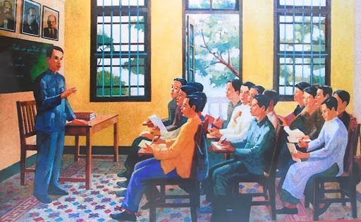Quảng Châu - “Căn cứ địa quốc tế” của cách mạng Việt Nam
Việc lãnh tụ Nguyễn Ái Quốc lựa chọn đến Quảng Châu, Trung Quốc là một bước đi quan trọng và nằm trong kế hoạch trở về Tổ quốc của Người, đồng thời cũng xuất phát từ những điều kiện khách quan của tình hình lúc bấy giờ.
Những năm 1923 - 1927, Quảng Châu - thủ phủ của tỉnh Quảng Ðông (Trung Quốc) là một trung tâm chính trị, kinh tế và văn hóa lớn ở miền Nam Trung Quốc. Nơi đây có nhiều khu công nghiệp lớn, bến cảng thông thương quốc tế, đồng thời cũng tập trung số lượng lớn công nhân với bề dày đấu tranh mạnh mẽ chống đế quốc, phong kiến và quân phiệt. Phong trào cách mạng Trung Quốc với Quảng Châu làm trung tâm đã thu được nhiều thắng lợi. Thời kỳ này, Quảng Châu được mệnh danh là “Moskva của phương Đông”, thu hút nhiều nhà cách mạng đến từ những quốc gia bị áp bức.
Tháng 1/1924, tại Quảng Châu, Đại hội lần thứ I của Quốc dân Đảng được tổ chức và tuyên bố thực hiện chủ nghĩa Tam dân mới của Tôn Trung Sơn với ba chính sách lớn: liên Nga, liên Cộng và giúp đỡ công nông; tiếp nhận sự trợ giúp của Đảng Cộng sản Trung Quốc và Đảng Cộng sản Liên Xô, cải tổ Quốc dân Đảng với sự giúp đỡ của đoàn cố vấn do Liên Xô và Quốc tế Cộng sản cử tới. Nội dung mới của chủ nghĩa Tam dân về cơ bản phù hợp với nhiệm vụ của thời kỳ cách mạng dân chủ tư sản kiểu mới ở các nước thuộc địa và phụ thuộc nên được lãnh tụ Nguyễn Ái Quốc chú ý, vì thấy nó “thích hợp với điều kiện của nước ta hiện nay”.
Những người cộng sản Trung Quốc mà lãnh tụ Nguyễn Ái Quốc quen biết, như Chu Ân Lai, Lý Phú Xuân, Trương Thái Lôi,... lúc này cũng đã có mặt tại Quảng Châu, tạo ra cục diện quốc - cộng hợp tác, cùng thúc đẩy cách mạng Trung Quốc. Chính vì vậy, Người tin rằng, ở Quảng Châu lúc này nếu kết hợp tham gia hoạt động thực tiễn trong phong trào cách mạng Trung Quốc với thực hiện mục tiêu vận động cách mạng Việt Nam, nhất định sẽ có hiệu quả.
Mặt khác, Quảng Châu cũng là nơi trú chân của những nhà hoạt động yêu nước và cách mạng Việt Nam thuộc nhiều thế hệ, hoặc xuất dương tìm đường cứu nước, hoặc thất bại phải lánh nạn ra nước ngoài. Ðầu những năm 20 của thế kỷ XX, một lớp thanh niên mới đầy nhiệt huyết đã cùng nhau tìm đến Quảng Châu. Lúc này Việt Nam Quang phục hội đang tan rã. Họ cảm thấy thất vọng trước khuynh hướng cách mạng bảo thủ, cũ kỹ của lớp tiền bối và muốn tìm một con đường đi mới. Vì vậy, năm 1922, họ đã lập ra nhóm Tâm Tâm xã, gồm những thanh niên đầy nhiệt huyết và chí khí, sẵn sàng hy sinh tính mệnh vì nghĩa lớn để thức tỉnh đồng bào, song vì chưa có người tổ chức và hướng dẫn nên họ chưa biết làm gì ngoài hành động mưu sát cá nhân mà tiêu biểu là vụ mưu sát Toàn quyền Ðông Dương Méc-lanh ngày 19-6-1924 tại Quảng Châu. Lãnh tụ Nguyễn Ái Quốc lúc đó đang ở Liên Xô dự Ðại hội lần thứ V Quốc tế Cộng sản. Người đã thấy “cánh én báo hiệu mùa xuân”, vì vậy, càng nóng lòng trở về Tổ quốc để dẫn dắt và chỉ đạo cách mạng Việt Nam (sau này, những thành viên ưu tú của Tâm Tâm xã đã trở thành hạt nhân của tổ chức Hội Việt Nam Cách mạng Thanh niên do lãnh tụ Nguyễn Ái Quốc thành lập ở Quảng Châu năm 1925).
Bên cạnh đó, lãnh tụ Nguyễn Ái Quốc cho rằng, tìm đến Quảng Châu, một địa điểm gần với Việt Nam, sẽ có điều kiện tương đối thuận lợi cho việc triển khai những công việc cần thiết để sớm thực hiện mục tiêu về nước phát triển phong trào cách mạng.
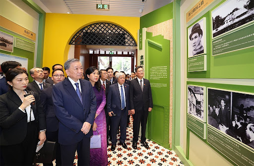Hoạt động không mệt mỏi để đặt cơ sở cho việc thành lập một chính đảng mác-xít ở Việt Nam
Với tầm nhìn chiến lược, với vị thế cán bộ của Ban Phương Đông, Quốc tế Cộng sản, tại Quảng Châu, lãnh tụ Nguyễn Ái Quốc đã lựa chọn một số thanh niên ưu tú yêu nước trong các tổ chức cách mạng, như Tâm Tâm xã, Việt Nam Quốc dân Đảng... và một số thanh niên yêu nước khác ở trong nước nhằm đào tạo họ trở thành những cán bộ cách mạng để đưa về nước hoạt động trong phong trào công nhân, trong đó lãnh tụ Nguyễn Ái Quốc đặc biệt chú ý tới các thành viên trong tổ chức Tâm Tâm xã. Tháng 6-1925, lãnh tụ Nguyễn Ái Quốc chính thức thành lập Hội Việt Nam Cách mạng Thanh niên, lấy tổ chức “Cộng sản đoàn” làm nòng cốt cho Hội, đào tạo cán bộ cộng sản để lãnh đạo Hội và truyền bá chủ nghĩa Mác - Lê-nin vào Việt Nam. Đại hội lần thứ I Hội Việt Nam Cách mạng Thanh niên (tháng 5-1929) khẳng định: “Hội Việt Nam Cách mạng Thanh niên là đội tiền phong cách mạng của dân chúng Việt Nam hết sức tổ chức dân chúng lại cho thành một đội quân tranh đấu rất có lực lượng; hết sức hy sinh đi trước để lĩnh đạo dân chúng quyết liệt tranh đấu với tụi bóc lột, đè nén, để lấy lại quyền lợi, để đoạt thủ chính quyền”; “để phá tan cái xã hội bất bình hiện tại mà lập ra xã hội ai cũng phải làm, ai cũng đủ dùng, ai cũng tự do, bình đẳng, tức là xã hội cộng sản”.
Hội Việt Nam Cách mạng Thanh niên là tổ chức có tính chất quá độ, phù hợp với thực tiễn cách mạng Việt Nam lúc đó, giúp cho những người Việt Nam yêu nước xuất thân từ các tầng lớp dễ tiếp thu chủ nghĩa cộng sản. Lãnh tụ Nguyễn Ái Quốc dùng tên hội mà chưa dùng tên đảng là do muốn đưa tổ chức cách mạng đó vào quần chúng một cách thuận lợi, để quần chúng dễ tiếp thu cả về tổ chức, tôn chỉ, mục đích của Hội, từ đó sẽ phát triển lên ở mức cao hơn. Hội được tổ chức thành 5 cấp: Tổng bộ, kỳ bộ, tỉnh bộ, huyện bộ và chi bộ. Thông qua những hội viên của Hội Việt Nam Cách mạng Thanh niên, thông qua phong trào “vô sản hóa”, luồng tư tưởng mới của thời đại đã xâm nhập vào phong trào công nhân và phong trào yêu nước, làm thay đổi tính chất, chiều hướng của phong trào đấu tranh cách mạng, không chỉ thu hút đông đảo các lực lượng vào tổ chức cách mạng của mình, mà còn ảnh hưởng tích cực đến các tổ chức chính trị cùng thời khác.
Có được tổ chức cách mạng, lãnh tụ Nguyễn Ái Quốc tiếp tục đào tạo một đội ngũ cán bộ cốt cán cho phong trào cách mạng bằng việc mở các lớp huấn luyện chính trị. Để thực hiện mục đích này, từ đầu năm 1926 đến tháng 4-1927, được sự giúp đỡ bí mật của Đảng Cộng sản Trung Quốc và Chính phủ cách mạng ở Quảng Châu, tại trụ sở số nhà 13 và 13B đường Văn Minh (nay là số nhà 248 và 250) đối diện với Trường Đại học Trung Sơn (nay là Bảo tàng Cách mạng Quảng Châu), lãnh tụ Nguyễn Ái Quốc đã trực tiếp mở ba lớp huấn luyện chính trị cách mạng cho lớp thanh niên ưu tú của Việt Nam, với tổng số 75 người. Lớp đầu tiên được khai mạc vào khoảng đầu năm 1926. Theo Báo cáo gửi Quốc tế Cộng sản ngày 3-6-1926, Người cho biết: “Tổ chức một trường tuyên truyền. Các học viên được bí mật đưa đến Quảng Châu. Sau một tháng rưỡi học tập, họ trở về nước. Khóa thứ nhất được mười học viên, khóa thứ hai sẽ mở vào tháng bảy tới, sẽ có khoảng 30 người”. Từ giữa năm 1926 đến đầu năm 1927, Người mở thêm hai lớp nữa, mỗi lớp hơn 30 người. Trong Báo cáo gửi Ban Phương Đông, Quốc tế Cộng sản, Người viết: “Mặc dù thiếu thời gian và tiền, nhờ sự giúp đỡ của các đồng chí người Nga và An Nam, chúng tôi đã có thể: 1) Đưa 75 thanh niên An Nam đến học ở Trường Tuyên truyền do chúng tôi tổ chức ở Quảng Châu, 2) Xuất bản 3 tờ tuần báo nhỏ, 3) Phái những người tuyên truyền vừa mới được đào tạo về Xiêm, Trung Kỳ, Bắc Kỳ và Nam Kỳ, 4) Thành lập một liên đoàn cách mạng do một ủy ban gồm 5 ủy viên ở Quảng Châu lãnh đạo, liên đoàn đã bắt rễ khắp nơi trong tất cả các xứ Đông Dương đó”.
Tại các lớp huấn luyện chính trị, lãnh tụ Nguyễn Ái Quốc trực tiếp phụ trách lớp và là giảng viên chính. Thông qua lớp huấn luyện, học viên được trang bị những vấn đề sơ giản về chủ nghĩa Mác - Lê-nin, về những nguyên tắc hoạt động bí mật, về kỹ năng thực hành các công tác vận động quần chúng... Nội dung học tập mới mẻ và phong phú, đã lôi cuốn sự say mê của các học viên, nhưng sức hút mạnh mẽ nhất đối với họ lại chính là những bài giảng sinh động, hấp dẫn và thiết thực của lãnh tụ Nguyễn Ái Quốc. Sau giờ học trên lớp, các học viên được đi tham quan thực tế các cơ sở cách mạng ở Quảng Châu, để học từ thực tiễn những kinh nghiệm quý giá, giúp ích cho bước đường hoạt động cách mạng của mình. Thông qua các tuyến đưa đón thanh niên ra dự lớp huấn luyện (Băng Cốc - Quảng Châu; Móng Cái - Quảng Châu; Lạng Sơn - Nam Ninh - Quảng Châu; giao thông trên các tàu buôn), với ba khóa huấn luyện (từ đầu năm 1926 đến tháng 4-1927) đã có 75 người được đào tạo. Khi học xong, có người ở lại nước ngoài công tác, có người được cử đi học tiếp ở Trường Đại học Phương Đông (Liên Xô), còn phần đông thì được cử về nước hoạt động, xây dựng và tổ chức, phát triển các phong trào cách mạng.
Đặc biệt, từ rất sớm, lãnh tụ Nguyễn Ái Quốc đã chuẩn bị cho cách mạng một đội ngũ cán bộ quân sự, bởi Người hiểu rằng, để lật đổ bộ máy thống trị thực dân, phong kiến, giành chính quyền về tay nhân dân thì sớm hay muộn phải cần tới bạo lực vũ trang. Vì thế, ở một hướng khác, Người đã gửi nhiều thanh niên Việt Nam theo học Trường Quân sự Hoàng Phố của Chính phủ Tôn Trung Sơn, dưới sự huấn luyện của các chuyên gia quân sự Xô-viết, trong số đó có một số thanh niên ưu tú, như Lê Thiết Hùng, Trương Vân Lĩnh, Phùng Chí Kiên… Những học viên sau khi tốt nghiệp trường này đã trở thành những cán bộ quân sự cốt cán của cách mạng, hăng say hoạt động trong Đảng Cộng sản Trung Quốc, gia nhập quân cách mạng và tham gia khởi nghĩa Quảng Châu.
Có thể thấy, 75 học viên của buổi đầu mới nhen nhóm trong ba lớp huấn luyện chính trị cách mạng tại Quảng Châu trong hai năm (1926 - 1927) là một con số đầy ý nghĩa. Đó là “75 hạt giống đỏ” được đích thân lãnh tụ Nguyễn Ái Quốc chọn lựa, đào tạo đã trưởng thành, cứng cáp, trở thành những cán bộ nòng cốt và từ những hạt giống này, tiếp tục nhân lên lớp lớp thanh niên cách mạng kế tiếp trên toàn đất nước Việt Nam. Như vậy, bằng sự nỗ lực vượt bậc, lãnh tụ Nguyễn Ái Quốc đã trở về gần Tổ quốc, “đi vào quần chúng, thức tỉnh họ, tổ chức họ, đoàn kết kết họ, huấn luyện họ”, để chuẩn bị đưa họ ra đấu tranh, giành độc lập, tự do.
Chuẩn bị về mặt lý luận, tuyên truyền
Cùng với việc đào tạo đội ngũ cán bộ, lãnh tụ Nguyễn Ái Quốc chủ trương xuất bản sách và báo chí làm phương tiện tuyên truyền. Báo Thanh niên là cơ quan ngôn luận của Hội Việt Nam Cách mạng Thanh niên do lãnh tụ Nguyễn Ái Quốc sáng lập và trực tiếp chỉ đạo, đồng thời là cây bút chủ chốt (số đầu tiên ra ngày 21-6-1926). Thông qua Báo Thanh niên, tổ chức Hội Việt Nam Cách mạng Thanh niên đã thống nhất về phương hướng và nội dung tuyên truyền, giáo dục ở trong và ngoài Hội. Báo Thanh niên ra hằng tuần bằng tiếng Việt. Từ tháng 6-1925 đến tháng 4-1927, báo ra được 88 số. Báo có các chuyên mục: xã hội, bình luận, tin tức, diễn đàn, vấn đáp, phê bình, trả lời bạn đọc,... Các bài đăng trên báo đều nhằm phục vụ đối tượng chủ yếu là công nhân và nhân dân lao động nước ta. Với nội dung dễ đọc, dễ hiểu, Báo Thanh niên đã kêu gọi tinh thần yêu nước, khơi dậy truyền thống và ý chí đấu tranh chống giặc ngoại xâm của toàn dân tộc, từ đó mong mọi người hãy xích lại gần nhau hơn, đoàn kết hơn vì sự nghiệp giải phóng dân tộc. Tuy số lượng phát hành không nhiều (100 bản), nhưng với hình thức nhỏ, gọn, được truyền tay nhau đọc, ghi chép lại rồi cho người khác đọc, nhờ có hệ thống giao thông cách mạng hoạt động tốt, Báo Thanh niên đã đến được khắp đất nước, sang cả Lào và Campuchia. Mật thám Pháp điên cuồng lùng sục, bắt bớ những người cộng sản, hủy gần hết những tờ báo mà chúng bắt được, song Báo Thanh niên vẫn đến được với đông đảo quần chúng, đến được với những chiến sĩ cách mạng và những nội dung tư tưởng của báo đã đem đến cho những người dân Việt Nam yêu nước một đường lối cứu nước mới, một phương pháp cách mạng mới. Có thể thấy, sự ra đời, những đóng góp của Báo Thanh niên đối với phong trào cách mạng Việt Nam ở những năm 20 của thế kỷ XX đã mở ra một bước ngoặt quan trọng trong lịch sử cách mạng Việt Nam. Là tờ báo đầu tiên trong lịch sử báo chí cách mạng nước ta, Báo Thanh niên đã góp phần quan trọng vào việc truyền bá chủ nghĩa Mác - Lê-nin vào Việt Nam, chuẩn bị về chính trị, tư tưởng và tổ chức để tiến tới thành lập chính đảng kiểu mới của giai cấp công nhân Việt Nam. Tiếp theo Báo Thanh niên, lãnh tụ Nguyễn Ái Quốc cùng các bạn chiến đấu của mình còn xuất bản ba tờ báo định kỳ khác là: Công nông (từ tháng 12-1926 đến đầu năm 1928), Lính cách mệnh (từ đầu năm 1927 đến đầu năm 1928) và Việt Nam tiền phong cho những đối tượng hẹp hơn.
Cùng với việc xuất bản báo, lãnh tụ Nguyễn Ái Quốc còn biên soạn cuốn sách Đường cách mệnh, gồm những bài giảng của Người tại các lớp huấn luyện chính trị cho cán bộ của Hội Việt Nam Cách mạng Thanh niên ở Quảng Châu trong những năm 1925 - 1927. Cuốn sách được Bộ Tuyên truyền của Hội Liên hiệp các dân tộc bị áp bức ở Á Đông xuất bản lần đầu tiên năm 1927 để làm tài liệu học tập và tuyên truyền. Đường cách mệnh được bí mật đưa về trong nước theo nhiều ngả đường khác nhau trong những năm 1927 - 1930. Trong bối cảnh Việt Nam đang khủng hoảng trầm trọng về đường lối cách mạng, phương pháp và tổ chức cách mạng, cùng với chính sách đàn áp hà khắc của thực dân Pháp, dư luận bị bưng bít thông tin, nhân dân bị đầu độc bởi văn hoá thực dân, thì cuốn sách Đường cách mệnh đã góp phần trang bị cho nhân dân hệ tư tưởng mới của thời đại và đưa cách mạng Việt Nam hòa nhập cùng dòng chảy chung của phong trào cách mạng giải phóng dân tộc trên thế giới. Có thể thẳng định, cuốn sách Đường cách mệnh ra đời đã đánh dấu một bước ngoặt trong cuộc đời hoạt động cách mạng của lãnh tụ Nguyễn Ái Quốc, đồng thời là một trong những văn kiện lý luận chính trị đầu tiên của Đảng ta, là nền tảng cho đường lối của cách mạng Việt Nam sau đó.
Người chiến sĩ lỗi lạc của phong trào cộng sản và công nhân quốc tế
Trong thời kỳ ở Quảng Châu, lãnh tụ Nguyễn Ái Quốc không chỉ quan tâm, chăm lo cho sự phát triển của phong trào cách mạng Việt Nam, mà còn tham gia những hoạt động giúp đỡ phong trào cách mạng Trung Quốc, phong trào cách mạng của các nước trong khu vực. Cùng với các đồng chí Trung Quốc, Ấn Độ, Triều Tiên, Miến Điện, Người đã tích cực vận động thành lập một tổ chức cách mạng có tính chất quốc tế, đó là Hội Liên hiệp các dân tộc bị áp bức (ngày 9-7-1925) nhằm đoàn kết các dân tộc nhỏ yếu, bị áp bức, liên lạc với các dân tộc cùng làm cách mạng nhằm đánh đổ chế độ thực dân, đế quốc.
Nhìn nhận về cách mạng Trung Quốc, lãnh tụ Nguyễn Ái Quốc luôn xuất phát từ những nét tương đồng trong lịch sử văn hóa Việt Nam - Trung Quốc, đồng thời thấy được mối quan hệ tương hỗ giữa cách mạng Trung Quốc với cách mạng vô sản thế giới. Người đã có nhiều đóng góp cho cách mạng Trung Quốc. Từ khi còn hoạt động ở Pháp và Nga, lãnh tụ Nguyễn Ái Quốc đã viết nhiều bài về Trung Quốc đăng trên các báo, như: Chủ nghĩa cộng sản và thanh niên Trung Quốc, đăng trên Báo L’Humanitté (Nhân đạo) ngày 19-8-1922; Tình hình ở Trung Quốc đăng trên Báo L’Humanitté ngày 4-12-1923; Tình cảnh nông dân Trung Quốc đăng trên Báo La Vie Ouvrière (Đời sống công nhân) ngày 1-4-1924,... Đầu năm 1924, lãnh tụ Nguyễn Ái Quốc cùng với một nhóm sinh viên Trung Quốc học tại Trường Đại học Phương Đông biên soạn cuốn sách “Trung Quốc và thanh niên Trung Quốc”.
Tại Quảng Châu, lãnh tụ Nguyễn Ái Quốc không chỉ bày tỏ thiện cảm, sự quan tâm và ủng hộ đối với phong trào cách mạng đang sục sôi, mà còn tham gia trực tiếp như một chiến sĩ của phong trào cộng sản và công nhân quốc tế. Người đã tham gia Hội nghị đại biểu đầu tiên của 20 vạn nông dân tỉnh Quảng Đông, Trung Quốc. Đầu tháng 5-1925, Người tham dự Hội nghị lần thứ hai đại biểu công nhân Trung Quốc. Ngày 19-6-1925, cuộc tổng bãi công của công nhân Hương Cảng, Quảng Châu bùng nổ nhằm ủng hộ “Phong trào 30 tháng 5”. Lãnh tụ Nguyễn Ái Quốc đề nghị được tham gia đội diễn thuyết với danh nghĩa là hội viên Hội Liên hiệp các dân tộc bị áp bức và được ghi tên với bí danh Lý Thụy. Trước đó, Người được Đoàn Chủ tịch Quốc tế Nông dân của Quốc tế Cộng sản ủy nhiệm phụ trách công tác vận động nông dân ở Trung Quốc và một số nước khác; tháng 7-1925, Người đã tham gia sáng lập Hội Liên hiệp các dân tộc bị áp bức ở Á Đông nhằm đoàn kết các dân tộc bị áp bức ở châu Á trong một mặt trận chống chủ nghĩa đế quốc. Người đã đặt cơ sở cho việc xây dựng tình đoàn kết giữa cách mạng Việt Nam với cách mạng các nước.
Tại Quảng Châu, theo dõi và chỉ đạo phong trào nông dân ở Trung Quốc và Đông Nam Á, tìm hiểu thực tiễn cách mạng Trung Quốc, tình hình các nhà hoạt động cách mạng đến từ các quốc gia, các dân tộc bị áp bức..., lãnh tụ Nguyễn Ái Quốc đã giúp Quốc tế Cộng sản nắm được tình hình về phong trào giải phóng dân tộc ở các nước phương Đông; phân tích, đánh giá để báo cáo với Quốc tế Cộng sản, hoặc viết bài đăng trên Tạp chí Thông tin quốc tế của Quốc tế Cộng sản. Điều đó góp phần làm gia tăng ảnh hưởng, tăng cường mối liên hệ giữa Quốc tế Cộng sản và phong trào cách mạng ở các nước phương Đông, thúc đẩy phát triển phong trào cách mạng vô sản trên phạm vi toàn thế giới.
Nguồn: Tạp chí Cộng sản
Thành lập Đảng
Nguyên nhân thành lập Đảng
Sự thống trị tàn bạo của thực dân Pháp đã làm cho mâu thuẫn dân tộc diễn ra hết sức gay gắt, dẫn đến các cuộc đấu tranh giải phóng dân tộc tuy diễn ra quyết liệt, song cuối cùng đều bị thất bại, vì thiếu một tố chức lãnh đạo có khả năng tập hợp sức mạnh của toàn dân tộc. Trong tình hình này, Nguyễn Ái Quốc đã cho rằng: Muốn cứu nước và giải phóng dân tộc thì trước hết phải có "Đảng cách mệnh" để "trong thì vận động và tổ chức dân chúng, ngoài thì liên lạc với dân tộc bị áp bức và vô sản giai cấp mọi nơi"
Có ba tổ chức cộng sản của Việt Nam được tuyên bố thành lập phản ánh xu thế tất yếu của phong trào đấu tranh cách mạng ở Việt Nam. Song ba tổ chức cộng sản ra đời hoạt động riêng rẽ, tranh giành ảnh hưởng với nhau. Vì thế, yêu cầu bức thiết của cách mạng là cần có một Đảng thống nhất lãnh đạo.
Các giai đoạn thành lập Đảng và Nội dung cuộc họp
Giai đoạn thành lập Đảng
Ngày 1/5/1929, tại Đại hội toàn quốc của Hội Việt Nam Cách mạng Thanh niên ở Hương Cảng (Trung Hoa Dân Quốc), đoàn đại biểu Bắc Kỳ đưa ra đề nghị thành lập Đảng Cộng sản nhưng đề nghị đó không được chấp nhận.
Từ tháng 6/1929 đến thángg 9/1929, ba tổ chức Cộng sản ở Việt Nam ra đời: Đông Dương Cộng sản Đảng, An Nam Cộng sản Đảng và Đông Dương Cộng sản Liên đoàn.
Tuy nhiên, sự tồn tại của cả ba tổ chức hoạt động biệt lập trong một quốc gia có nguy cơ dẫn đến chia rẽ lớn, vì thế cần có một Đảng thống nhất lãnh đạo. Từ đó, ngày 3/2/1930, hội nghị hợp nhất ba tổ chức Cộng sản họp tại Cửu Long, Trung Hoa Dân Quốc (được ví như Đại hội thành lập Đảng).
Nội dung cuộc họp
Trong cuộc họp, hội nghị đã đưa ra quyết định hợp nhất ba tổ chức Cộng Sản: Đông Dương Cộng sản Đảng, An Nam Cộng sản Đảng và Đông Dương Cộng sản Liên đoàn thành một Đảng duy nhất và được lấy tên là Đảng Cộng sản Việt Nam, đồng thời Nguyễn Ái Quốc đã phê phán những quan điểm sai lầm của các tổ chức cộng sản hoạt động riêng rẽ.
Cương lĩnh chính trị đầu tiên của Đảng Cộng sản Việt Nam (Chính cương vắn tắt, Sách lược vắn tắt, Điều lệ tóm tắt) do Nguyễn Ái Quốc khởi thảo cũng được thông qua.
Giá trị và ý nghĩa
Đảng Cộng sản Việt Nam được thành lập là kết quả của cuộc đầu tranh giai cấp và đầu tranh dân tộc ở nước ta trong những năm đầu thế kỷ XX - là sản phẩm của sự kết hợp chủ nghĩa Marx - Lenin với phong trào công nhân và phong trào yêu quốc và là kết quả của quá trình lựa chọn, sàng lọc nghiêm khắc của lịch sử và là kết quả của quá trình chuẩn bị đầy đủ về chính trị, tư tưởng và tổ chức của một tập thể chiến sĩ cách mạng, đứng đầu là đồng chí Nguyễn Ái Quốc.
Cương lĩnh đầu tiên của Đảng ra đời, đã xác định được những nội dung cơ bản nhất của con đường cách mạng Việt Nam; đáp ứng được những nhu cầu bức thiết của lịch sử và trở thành ngọn cờ tập hợp, đoàn kết thống nhất các tổ chức cộng sản, các lực lượng cách mạng và toàn thể dân tộc. Đó là một mốc lớn đánh dấu bước ngoặt trọng đại trong lịch sử cách mạng Việt Nam, chấm dứt cuộc khủng hoảng về đường lối cứu nước kéo dài mấy chục năm.

⇒ Sự ra đời của Đảng Cộng sản Việt Nam gắn liền với tên tuổi của Nguyễn Ái Quốc.
1930 - 1940
Chuyến ở Đông Nam Á
Sau khi thành lập Đảng cộng sản Việt Nam, Chủ tịch Hồ Chí Minh đã rời Trung Quốc đi đến một số nước ở Đông Nam Á như Thái Lan, Malaysia... để làm nhiệm vụ quốc tế.
Để tăng cường lãnh đạo phong trào cách mạng đang sôi sục trong cả nước, tháng 10 năm 1930 tại Hồng Kông, Hội nghị lần thứ nhất Ban chấp hành trung ương Đảng đã họp, nhằm thảo luận và thông qua “Luận cương cách mạng tư sản dân quyền” do đồng chí Trần Phú, một trong những người học trò xuất sắc của Chủ tịch Hồ Chí Minh khởi thảo.
Sau Hội nghị lần thứ nhất của Ban chấp hành Trung ương Đảng, Chủ tịch Hồ Chí Minh báo cáo với Quốc tế cộng sản về những nghị quyết của Hội nghị. Người ở lại Hồng Kông, theo dõi sát và kịp thời động viên cao trào cách mạng Xô Viết Nghệ Tĩnh đang diễn ra ở Việt Nam.
Ngày 13/02/1931 với bí danh Victor, Người gửi lên Ban chấp hành Quốc tế cộng sản bản báo cáo nhan đề “Nghệ Tĩnh đỏ”. Người đã nhận định: “Nhân dân đói khát và nơi ăn, chốn ở rất khổ sở, sưu thuế nặng nề và nạn áp bức xã hội, chính trị đã làm cho cảnh ngộ của họ càng cùng cực hơn”.
Trong những năm 1930 - 1931 Chủ tịch Hồ Chí Minh không chỉ động viên cao trào Xô Viết Nghệ Tĩnh mà còn góp ý kiến cụ thể với Trung ương Đảng để chỉ đạo thực hiện tốt đường lối của Đảng.
Trong khi cùng Trung ương Đảng lãnh đạo cách mạng trong nước, lúc ấy với cương vị là uỷ viên Ban Phương Đông của Quốc tế cộng sản, phụ trách cục Phương Nam, Người vẫn tiếp tục tham gia xây dựng phong trào cách mạng các nước Đông Nam Á.
Hoảng sợ trước cao trào cách mạng 30 - 31 và ảnh hưởng hoạt động của Chủ tịch Hồ Chí Minh đối với các nước Đông Nam Á. Tháng 6/1931, Đế quốc Anh đã bắt giam Người (có tên là Tống Văn Sơ) một cách trái phép trong Nhà tù thực dân Anh ở Hồng Kông (1931 -1933). Dù bị giam cầm thể xác trong chốn lao tù, nhưng tâm trí Người, luôn theo dõi sát sao phong trào cách mạng trong nước, từng giờ, từng phút tìm cách trở về với cách mạng, vẫn nuôi dưỡng khát vọng “sớm trở về Tổ quốc tôi để giải phóng đồng bào”.
Được tin Hồ Chí Minh bị bắt, Liên đoàn chống chủ nghĩa đế quốc, ủng hộ nền độc lập dân tộc đã kịp thời ra tuyên bố phản đối chính phủ Anh và đòi trả lại tự do cho Người. Luật sư Loseby đã đưa vấn đề ra công khai và nhận gắng sức bào chữa cho Người. Do tinh thần kiên định của mình, được Quốc tế Cứu tế đỏ thuê luật sư và luật sư Lô dơ bai vì kính phục Người đã hết lòng giúp đỡ, toà án Hồng Kông và hội đồng nhà vua Anh buộc phải tuyên bố xoá án cho Người. Mùa xuân 1933, Người ra khỏi nhà lao của đế quốc Anh, rời Hồng Kông đi Ma Cao và một số nước khác. Sau khi bắt được liên lạc với Quốc tế cộng sản, mùa xuân 1934, Người xuống tàu thuỷ Liên Xô rời Thượng Hải sang Liên Xô.
Trở lại Moskva
Sau khi trở lại Moskva (Liên Xô) vào tháng 6/1933, Nguyễn Ái Quốc vào học Trường Quốc tế Lênin – Trường dành cho những người cộng sản nước ngoài, nhằm giúp đỡ các Đảng Cộng sản đào tạo cán bộ cách mạng, nhất là cán bộ chủ chốt. Chính tại đây, Nguyễn Ái Quốc có điều kiện đi sâu vào những vấn đề của cách mạng vô sản, kết hợp kinh nghiệm thực tiễn của bản thân tích luỹ qua hàng chục năm hoạt động cách mạng, để suy nghĩ và tiếp tục hoàn chỉnh con đường cách mạng giải phóng và phát triển dân tộc Việt Nam. Tiếp đó, năm 1935, Người tham dự Đại hội VII Quốc tế cộng sản, tìm thấy trong nghị quyết Đại hội nhiều quan điểm mới về chiến lược, sách lược của cách mạng giải phóng dân tộc ở các thuộc địa, đặc biệt là vấn đề phải xây dựng cho được một mặt trận dân tộc thống nhất rộng rãi chống đế quốc, đòi dân chủ, cơm áo và hoà bình.
Vượt qua biết bao khó khăn, thử thách, trước sự chuyển biến mau lẹ của tình hình thế giới và trong nước, nhất là nguy cơ của một cuộc chiến tranh thế giới do đế quốc phát xít gây ra đang tới gần, đe doạ vận mệnh các dân tộc, sau khi Quốc tế cộng sản “đồng ý” để Người về nước công tác, Hồ Chí Minh đã sớm rời Viện Nghiên cứu các vấn đề dân tộc và thuộc địa (9-1938), bỏ lại bản luận án nghiên cứu sinh đang viết dở. Người đáp xe lửa, rời Mátxcơva, đi về phương Đông. Cuối năm 1939, Người đến Côn Minh – thủ phủ tỉnh Vân Nam (Trung Quốc), tìm bắt liên lạc với tổ chức Đảng, tìm đường về nước.
Khoảng cuối năm 1938, Chủ tịch Hồ Chí Minh đến Trung Quốc để tìm đường về nước. Bởi trong khi làm nhiệm vụ quốc tế, Người vẫn luôn quan tâm đến cách mạng Việt Nam. Nhờ có sự lãnh đạo đúng đắn của Chủ tịch Hồ Chí Minh và của Đảng ta, phong trào đấu tranh của quần chúng nhân dân đòi cải thiện đời sống đã lôi cuốn và giáo dục ý thức chính trị cho hàng triệu người. Uy tín của Đảng và Hồ Chí Minh được mở rộng và ăn sâu trong quần chúng nhân dân ta.
Nguồn: Cơ quan chủ quản: Văn phòng Trung ương Đảng và Bác Hồ - Kỷ niệm thời niên thiếu ở Thừa Thiên Huế
Vụ án Tống Văn Sơ
Vụ án Tống Văn Sơ còn được biết đến với tên Sự kiện Nguyễn Ái Quốc ở Hồng Kông 1931–1933 (tên tiếng Anh trong hồ sơ lưu trữ: Sung Man Cho Vs. The Superintendent of Prisons). Đây là vụ án liên quan đến Nguyễn Ái Quốc khi ông hoạt động và bị bắt giam ở Hồng Kông từ tháng 6 năm 1931 đến tháng 1 năm 1933.
Trước vụ án
Kể từ khi thay mặt Hội những người Việt Nam yêu nước tại Pháp ký tên vào bản Yêu sách của nhân dân An Nam gửi hội nghị Vecxay - Pháp, cho đến khi sáng lập Đảng Cộng sản Việt Nam, Nguyễn Ái Quốc đã trở thành một nhân vật quan trọng trong kế hoạch lùng bắt của thực dân Pháp. Vì vậy, hoạt động giữa vòng vây của nhiều kẻ thù, kèm theo một án tử hình vắng mặt của toà Đại hình Vinh theo phán quyết số 115 (10/10/1929), cùng lệnh truy nã ráo riết của thực dân Pháp luôn là những khó khăn, là những hiểm nguy cận kề đối với Nguyễn Ái Quốc.
Trong giai đoạn 1930-1931, mạng lưới tình báo Anh-Pháp tăng cường hoạt động tại Châu Á, đặc biệt khu vực Đông Nam Á, nhằm chống lại sự bành trướng của Quốc tế Cộng sản. Nnhững cuộc nổi dậy trong phong trào Xô Viết - Nghệ Tĩnh do Đảng Cộng sản tổ chức bị chính quyền Pháp đàn áp dữ dội. Một vài thành viên cộng sản bị bắt và từ đó, tình báo Anh- Pháp đã truy ra một vài thành viên khác.
Tháng 4/1930, Nguyễn Ái Quốc đến Thái Lan, Singapore, và Malaysia hoạt động thời gian ngắn. Trong thời gian ở Singapore, ông được Tổng lãnh sự Trung Quốc ở Singapore cấp hộ chiếu số B.98, mang tên Tống Văn Sơ, quốc tịch Trung Quốc. Tháng 5 năm 1930, ông trở về Hồng Kông theo chỉ thị của Quốc tế Cộng sản. Người ở tại ngôi nhà 186 phố Tam Kung, Cửu Long - Hương Cảng, và nơi đó trở thành trụ sở liên lạc bí mật giữa Nguyễn Ái Quốc và một số đồng chí khác.
Kể từ khi thay mặt Hội những người Việt Nam yêu nước tại Pháp ký tên vào bản Yêu sách của nhân dân An Nam gửi hội nghị Vecxay - Pháp, cho đến khi sáng lập Đảng Cộng sản Việt Nam, Nguyễn Ái Quốc đã trở thành một nhân vật quan trọng trong kế hoạch lùng bắt của thực dân Pháp. Vì vậy, hoạt động giữa vòng vây của nhiều kẻ thù, kèm theo một án tử hình vắng mặt của toà Đại hình Vinh theo phán quyết số 115 (10-10-1929), cùng lệnh truy nã ráo riết của thực dân Pháp luôn là những khó khăn, là những hiểm nguy cận kề đối với Nguyễn Ái Quốc.
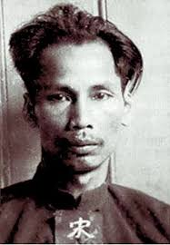Vụ án
Vào lúc 2:00 sáng ngày 6/6/1931, tại nhà số 186 phố Tam Kung, Cửu Long (Kowloon), một tốp cảnh sát ập vào bắt giữ Nguyễn Ái Quốc khi đó đang ở cùng Lý Phương Thuận (vợ của Hồ Tùng Mậu). Thời điểm bị bắt, Nguyễn Ái Quốc mang giấy tờ tùy thân tên Tống Văn Sơ, quốc tịch Trung Quốc. Ông bị bắt với nghi vấn tuyên truyền phản động chống chính quyền Anh quốc theo Sắc lệnh cấm xuất bản tài liệu phản động năm 1914 của chính quyền thuộc địa Hồng Kông. Nguyễn Ái Quốc bị đưa về Nhà tù Victoria (Hồng Kông).
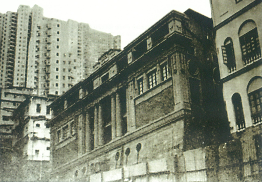Thực dân Pháp rất mừng trước việc Nguyễn Ái Quốc bị bắt. Toàn quyền Robin đã điện từ Hà Nội vào báo tin cho Bộ trưởng Bộ Thuộc địa Pháp, Bộ Ngoại giao Pháp và Tổng Lãnh sự Pháp tại Hồng Kông về “niềm vui bất ngờ này” và đồng thời mở cuộc vận động chính quyền Hồng Kông giao Nguyễn Ái Quốc cho chính quyền Pháp bằng cách dẫn độ về Đông Dương hoặc giam giữ ở một nơi xa xôi nào đó của Anh trên nguyên tắc “có đi có lại”, chứ tuyệt nhiên không được “trả tự do” cho Người, vì “trả tự do cho con người vô cùng năng động và nguy hiểm này là khả năng cần phải tránh bằng mọi giá”. Không chỉ có vậy, nhấn mạnh việc “trả tự do cho Nguyễn Ái Quốc chỉ có thể làm trầm trọng thêm những hoạt động có hại của phong trào Đông Dương”, chính quyền Pháp còn vận động chính quyền Anh ở London giao Nguyễn Ái Quốc cho chúng.
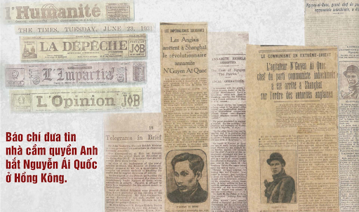Khi nhận được tin Nguyễn Ái Quốc bị bắt, chính phủ Đông Dương đề nghị chính quyền Anh tại Hồng Kông dẫn độ về Việt Nam để xét xử. Đổi lại, Pháp hứa sẽ giao cho phía Anh số tù nhân là đảng viên cộng sản Ấn Độ và Miến Điện bị bắt. Tuy nhiên, do Nguyễn Ái Quốc là nghi phạm chính trị, mà theo đạo luật Dẫn Độ năm 1870 do Hạ viện Anh ban hành, không cho phép dẫn độ các nghi can phạm các tội chính trị ra khỏi lãnh thổ và thuộc địa Anh. Giữa Anh và Pháp lúc đó cũng không có hiệp ước dẫn độ riêng nào. Do vậy, phía chính quyền thuộc địa Anh ở Hồng Kông không thể làm theo yêu cầu dẫn độ của Pháp. Tống Văn Sơ do vậy đã thoát chết trong gang tất (và ông còn thoát chết nhiều lần nữa trước nguy cơ bị trục xuất)
Sau khi bắt giữ Tống Văn Sơ, chính quyền Hồng Kông lùng sục nơi ở của ông nhưng không tìm được tài liệu nào để chứng minh ông phạm tội dưới Sắc lệnh cấm xuất bản tài liệu phản động. Do vậy, sau 6 ngày tạm giam, Chính quyền Hồng Kông ra quyết định trục xuất Nguyễn Ái Quốc viện dẫn Sắc lệnh Trục xuất năm 1917. Tuy nhiên, trước sức ép của cánh tả Pháp và Quốc tế Cộng sản thời bấy giờ, họ đã không trục xuất ông.
Trong khi đó, Hồ Tùng Mậu, qua Liên đoàn Quốc tế cứu tế, , một cơ quan thuộc Quốc tế Cộng sản, đỏ đã đến gặp luật sư Francis Henry Loseby - một luật sư tiến bộ người Anh ở Hồng Kông nhờ giúp đỡ. Việc bắt lén người trái pháp luật đã bị bại lộ khi báo chí đồng loạt đưa tin sự kiện Nguyễn Ái Quốc bị bắt. Và để hợp pháp hóa việc bắt giữ, Thống đốc Hồng Kông đã phải ra lệnh bắt giam Người nhiều lần và Sở cảnh sát Hồng Kông buộc phải đồng ý để luật sư vào gặp Tống Văn Sơ (24/6/1931). Ngay sau khi tham gia vụ án Tống Văn Sơ, Loseby cảnh báo với chính quyền Hồng Kông rằng nếu Tống Văn Sơ bị trục xuất về Đông Dương thì sẽ bị Pháp sẽ bắt giữ và tử hình ngay. Ông yêu cầu chính quyền Hồng Kông phải thả Tống Văn Sơ ra và cho phép Tống tự do đến nơi mà anh muốn.
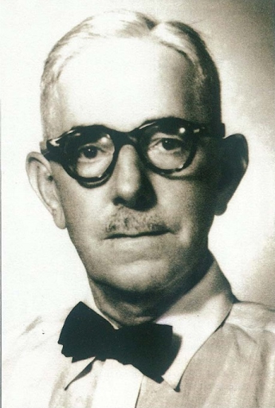Phía luật sư của Tống Văn Sơ ngay lập tức kháng án đến Ủy ban Tư pháp thuộc Viện Cơ mật Hoàng gia Anh, nơi có thẩm quyền tối cao đối với các vụ án xảy ra tại các xứ thuộc địa của Anh. Họ cho rằng lệnh trục xuất Tống Văn Sơ không có giá trị dưới luật pháp Hồng Kông.
Đến đầu năm 1932, đơn kháng cáo của Tống Văn Sơ được đưa ra xét xử tại Ủy ban Luật pháp thuộc Viện Cơ mật Hoàng gia Anh. Lần này, luật sư đại diện Tống Văn Sơ là Denis Nowell Pritt – một luật sư danh tiếng người Anh, thành viên Công Đảng Anh, quan điểm thiên tả cực đoan và có xu hướng ủng hộ Liên Xô. Còn đại diện Cơ Mật Viện Hồng Công là Richard Stafford Cripps – đang giữ cương vị Phó Chưởng lý tại Anh, cũng thuộc Công Đảng Anh, quan điểm thiên tả, sau này trở thành Đại sứ Anh tại Liên Xô.
Ngày 21/7/1932, Cơ Mật Viện đưa ra phán quyết với 4 điều khoản:
• Thứ nhất, Tống Văn Sơ phải bị trục xuất khỏi Hồng Kông và không được trở lại trong vòng 10 năm.
• Thứ hai, nơi đến sau khi trục xuất không phải lãnh thổ Pháp, thuộc địa bảo hộ của Pháp, và không rời khỏi
Hồng Kông bằng tàu Pháp.
• Thứ ba, Thống đốc Hồng Kông sẽ nỗ lực tối đa đảm bảo nguyên đơn (Tống Văn Sơ) được trục xuất đến nơi mà
nguyên đơn mong muốn.
• Cuối cùng, chính quyền Hồng Kông sẽ góp 250 bảng Anh vào chi phí tố tụng cho bên nguyên đơn.
Cuối cùng thì ngày 28/12/1932, vì không có bằng chứng, chính phủ Hồng Công chính thức trả tự do cho Nguyễn Ái Quốc sau 18 tháng bị giam giữ. Chính quyền Hồng Kông ra lệnh ông phải rời khỏi Hồng Kông trong vòng 21 ngày. Gia đình Luật sư Loseby đón và giúp ông thu xếp để rời Hồng Kông. Nguyễn Ái Quốc cải trang thành một nhà Nho Trung Hoa với bộ râu giả. Vì lo sợ sẽ bị chính quyền Pháp bắt khi đi ngang kênh đào Suez, Nguyễn Ái Quốc yêu cầu được tị nạn tại Úc hoặc Nam Phi trước khi đến Châu Âu. Hai nước này đều từ chối lời yêu cầu. Đứng trước tình thế này, ông đành phải từ bỏ ý định đến Anh, và chọn Moskva làm điểm đến sau khi được thả.
Sau vụ án
Sau khi rời khỏi Hồng Kông, Nguyễn Ái Quốc đã hai lần viết thư cho luật sư Loseby, nhưng vì sợ nhà cầm quyền tìm ra địa chỉ của Người nên luật sư đã không trả lời. Trong thời gian đó, Tống Văn Sơ tiếp tục hành trình tìm đường giải phóng dân tộc. Mùa xuân năm 1941, Người trở về Tổ quốc, trực tiếp lãnh đạo phong trào cách mạng cả nước. Và giương cao ngọn cờ độc lập, tự do, dưới sự lãnh đạo của Đảng Cộng sản do Hồ Chí Minh đứng đầu, cuộc cách mạng giải phóng dân tộc mùa thu năm 1945 đã thành công. Nước Việt Nam Dân chủ Cộng hòa ra đời, và người Thanh niên Việt Nam -Tống Văn Sơ được gia đình luật sư cứu giúp năm nào ở Hồng Kông, giờ đây trở thành Chủ tịch nước Việt Nam Dân chủ Cộng hoà. Vẫn tiếp tục đấu tranh cho hoà bình, độc lập, tự do và thống nhất Tổ quốc, cuộc kháng chiến chống thực dân Pháp của nhân dân Việt Nam đã giành được thắng lợi sau 9 năm kháng chiến gian khổ. Tuy nhiên, để có một nền hoà bình trọn vẹn ở cả hai miền Nam, Bắc, nhân dân Việt Nam vẫn phải tiếp tục vừa xây dựng Chủ nghĩa Xã hội ở miền Bắc, vừa tiến hành cuộc đấu tranh giải phóng ở miền Nam.
Nguồn: Tuổi Trẻ Bà Rịa - Vũng Tàu - Facebook, Khu di tích Chủ tịch Hồ Chí Minh tại Phủ Chủ Tịch và Quân Đội Nhân Dân Việt Nam